Donchian
La semana pasada introdujimos los canales de Donchian, y hoy, antes de continuar con ese tema (aunque está relacionado), quiero enseñaros algo que ha pasado esta semana. Es una de las cosas bonitas del curso: poder seguir la actualidad del mercado en tiempo real.
Durante la teoría, los que hayáis podido asistir, recordaréis que comenté que las bases de datos se podían cargar en modo diario. Incluso recuerdo que alguien me preguntó por qué usábamos, por ejemplo, un gráfico de 500 minutos o 1.440 minutos (que equivalen a un día entero: 24 horas × 60 minutos = 1.440). Eso equivale a una vela diaria.
Ahí estáis viendo tres gráficos del Nasdaq:
Visualmente son muy parecidos, pero no exactamente iguales, como ahora veréis.
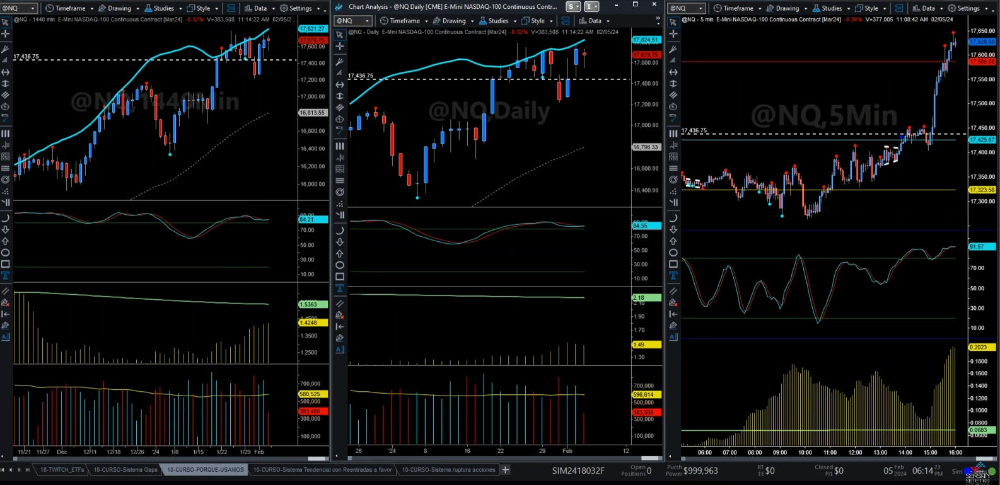
Temporada de resultados y diferencia entre cierres
Esta semana ha ocurrido algo interesante. Estamos en temporada de publicación de resultados empresariales. Cuando una gran empresa publica resultados al cierre, pueden producirse movimientos muy bruscos. El jueves 1, al cierre, publicaron resultados Apple, Meta y Amazon. Meta, en particular, tuvo una subida estratosférica. Esto ocurrió justo después del cierre, alrededor de las 22:15 hora española (15:15 en horario de Nueva York). El contado acababa de cerrar y el futuro seguía cotizando un poco más, hasta las 22:45. Ahí es cuando se produce lo que llamamos el SETTLE, el precio de liquidación oficial del futuro. Ese es el precio que el mercado utiliza como referencia de cierre diario.
Aquí lo tengo documentado: podéis ver el gráfico diario a la izquierda y el de 1.440 minutos a la derecha. En la mayoría de días, ambos gráficos son iguales, pero cuando hay resultados, las diferencias pueden ser enormes.
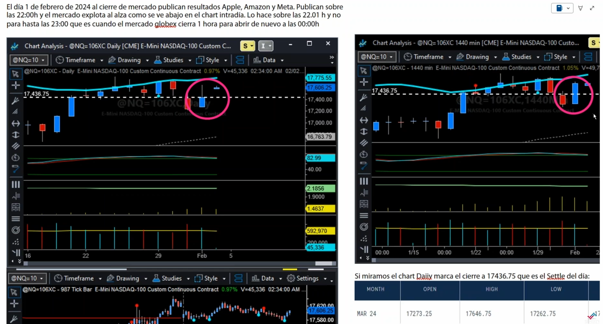
En este caso, la línea blanca en el gráfico (marcada en 17,436.75) indica el precio de liquidación oficial del futuro. Ese es el precio que todos los fondos usan para su mark-to-market diario. Sin embargo, no es el precio real negociado en el mercado durante el día.
De hecho, minutos después del cierre, el precio ya estaba 200 puntos por encima. Por eso, si operas con un sistema basado en gráfico diario, y usas ese precio de liquidación, tu análisis no refleja la realidad intradía.
Diferencias entre la base diaria y la intradiaria
Si usas el gráfico diario estándar, éste no permite cambiar la sesión
horaria, y siempre refleja el precio de liquidación oficial. En cambio,
si construyes la vela diaria con datos intradiarios (1.440
minutos), reflejarás el precio real de mercado, el
que se generó con las órdenes reales de compra y venta. Esto es muy
importante para los que trabajamos con sistemas
automáticos:
Por eso, es preferible construir las velas diarias con la base intradiaria, ya que muestra lo que realmente ocurrió en el mercado.
Ejemplo detallado del caso Meta
En el ejemplo concreto de Meta, el precio oficial fue 17,436.75, lo ves en la linea blanca
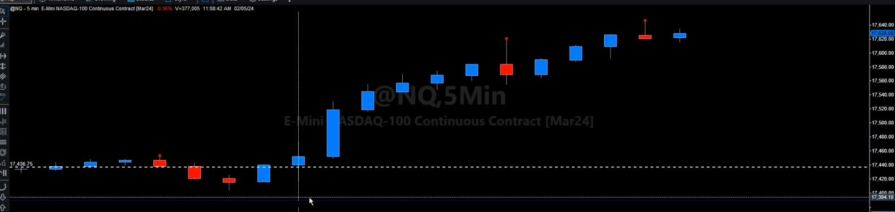
pero el precio real en el gráfico intradiario cerró cerca de 17,628, unos 200 puntos por encima.
Esto demuestra que, cuando hay resultados, las diferencias pueden ser muy notables. El settle no se conoce en tiempo real; aparece después, cuando el mercado calcula el precio de liquidación oficial.
Por tanto, >si un sistema compró intradía porque detectó una señal alcista, pero el settle diario se publicó más bajo, al día siguiente ese sistema aparecería “no comprado”. Esto se debe a que el precio oficial fue corregido posteriormente.
Recomendaciones para operar con
sistemas diarios
Cuando operamos con sistemas en gráfico diario, y especialmente con datos de futuros, es mejor
construir la vela diaria a partir de la intradiaria (1440 minutos). Así evitamos los efectos del precio de liquidación oficial (settle), que puede distorsionar la operativa. Esto también se aplica a los ETFs que replican el índice: cierran a precios similares al settle, pero no reflejan necesariamente la reacción inmediata a los resultados de las empresas.
Temporada de resultados y observaciones finales
Durante estas semanas, hay muchas velas distintas debido a la temporada de resultados. Normalmente, las velas son parecidas, pero cuando grandes empresas publican, surgen diferencias notables. Esta semana fue un ejemplo clarísimo, y por eso lo documenté para enseñároslo.
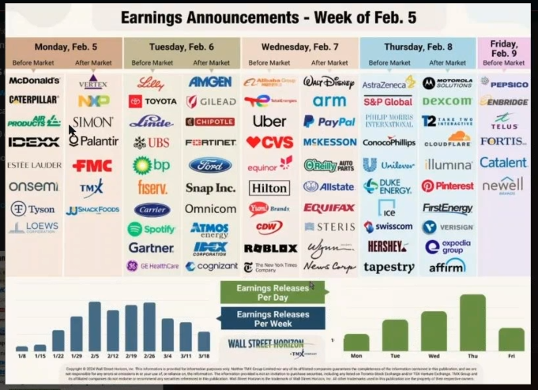
Recordad que publicamos cada semana la imagen con el calendario de resultados (fuente: Earnings Whispers). Por ejemplo, esta semana publican McDonald’s, Disney y Pepsi, entre otras. Las grandes tecnológicas ya lo han hecho: Apple, Meta, Amazon, Google, Netflix, y probablemente NVIDIA próximamente.
Configuración de sesiones y recomendaciones técnicas
Para terminar, recordad lo siguiente:
Session Hours , para que la primera barra empiece al inicio
de la sesión (ahí empieza a contar la barra de 5min, 30’ o lo que sea,
de 1440’ en este caso).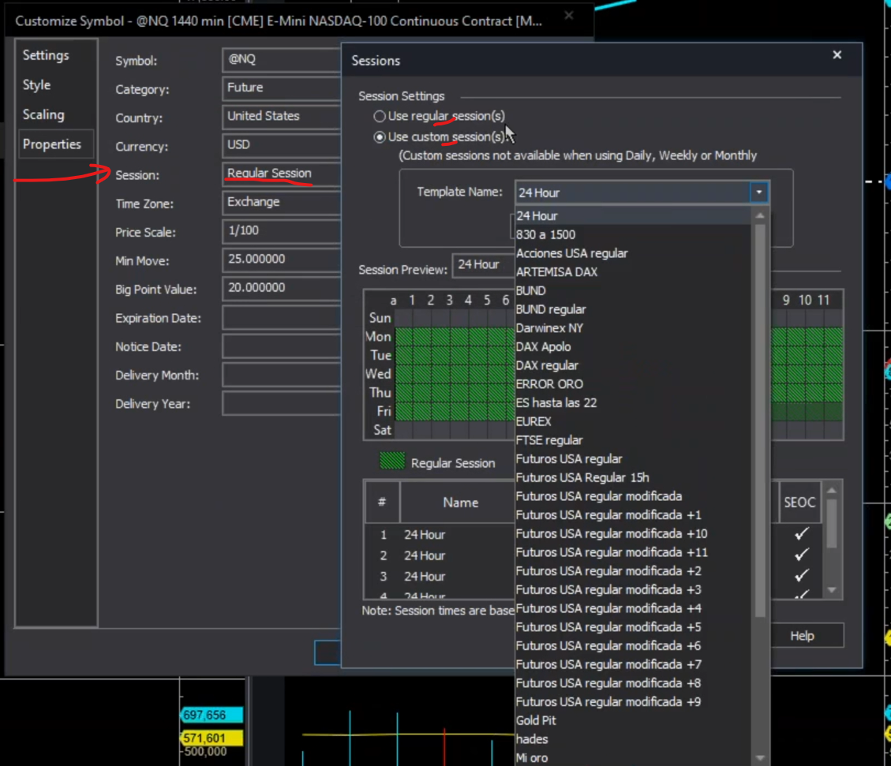
Esto es otra razón para trabajar con la base intradiaria cuando queréis controlar la hora de cierre o adaptar la operativa.
canales de Donchiancode : PRACTICE 02
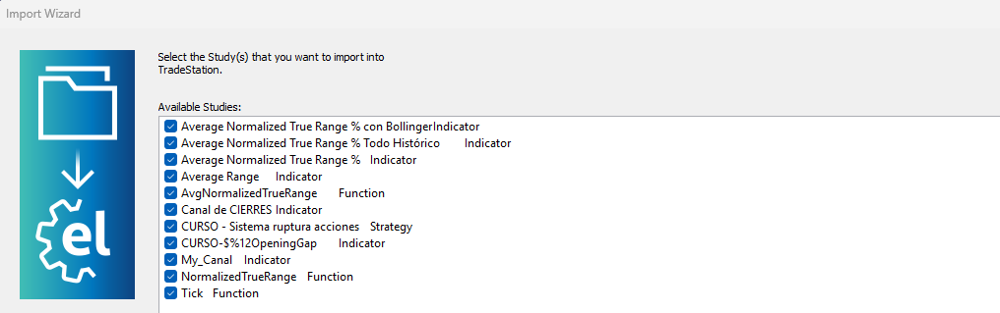
He querido empezar por este sistema porque es uno que, más o menos, todos los que llevan un tiempo en los mercados han oído mencionar alguna vez. Quien nunca haya hecho trading quizá no lo conozca, pero quienes ya tienen cierta experiencia saben que los canales de Donchian son bastante conocidos y respetados.
Durante el curso, quien no hubiera oído hablar de ellos antes, ya los habrá visto en la parte de historia del trading algorítmico. A quien no haya hecho todavía esa parte, le recomiendo hacerlo, porque es muy curiosa y está al principio del curso. En ella hablamos de Donchian, que fue uno de los primeros en operar de forma sistemática —no automática, porque en su época no se podía como ahora—, pero sí con un enfoque metódico, con reglas claras, estrategias bien definidas y diversificación en muchos activos (commodities y demás).
El sistema original de Donchian y las reglas de las cuatro semanas
Donchian utilizaba un sistema muy popular basado en
20 periodos, que equivalen a cuatro semanas.
De hecho, se le conocía como la regla de las cuatro semanas. Él
trabajaba principalmente en gráfico semanal y, a partir de su enfoque,
nació posteriormente el famoso sistema de las tortugas
(Turtle System).
Tengo preparados algunos documentos sobre esto, que voy a subir también a la plataforma y al Discord. Veréis una sección llamada “Documentos” donde aparecerán tres archivos que acabo de subir. Nosotros estamos suscritos a la revista Stocks & Commodities y, haciendo un ejercicio curioso, busqué simplemente “Donchian’s” y me aparecieron 58 referencias. He seleccionado tres de las más recientes para compartirlas con vosotros, porque están muy bien y explican el sistema con bastante claridad.
Aquí tenéis los tres artículos:
Estos artículos, en apariencia, reproducen las reglas originales de Donchian’s Trading. No existe un libro oficial de Donchian, pero se sabe que publicó sus ideas en distintos diarios y revistas, y de ahí se extrajeron estos textos.
La importancia de acudir a las fuentes originales
Siempre insisto en algo que considero muy importante: cuando utilicéis cualquier indicador o estrategia, id siempre al autor original. La comunidad de trading, con el tiempo, tiende a modificar o simplificar conceptos, a veces ignorando partes esenciales de una regla o de la filosofía del autor. Por eso, leer la fuente original os permite entender el propósito real del creador, su lógica y las condiciones bajo las que diseñó el indicador.
En términos generales, el sistema de Donchian
marca un canal de precios, y cuando el precio
rompe ese canal, se interpreta como el
inicio de una nueva tendencia. Lógicamente, es un sistema
más eficaz en activos con comportamientos tendenciales y en
periodos más largos.
Uso intradiario y dificultad en tendencia pura
Personalmente, es un indicador que recomiendo, especialmente para
marcar estructuras de tendencia.
Sin embargo, cuando se usa de forma intradiaria, las cosas
se complican un poco. No es imposible, pero lograr una tendencia
pura en marcos tan cortos es mucho más difícil. En teoría, un
sistema tendencial puro debe dejar correr los
beneficios, lo que implica
no tener Take Profits (TPs). Si uno quiere diversificar de
verdad, necesita sistemas de este tipo, aunque sean menos cómodos
psicológicamente o tengan peores ratios de acierto.
Psicología del trader y tipos de sistemas
En las clases teóricas ya comentamos la parte psicológica. Recuerdo que hicimos un ejercicio para medir la aversión al riesgo, y la próxima clase os preguntaré los resultados por curiosidad, para ver si coinciden con los ratios esperados.
Normalmente, tanto los traders principiantes como muchos
avanzados se sienten más cómodos con
sistemas antitendenciales, es decir, aquellos con una
alta tasa de acierto. Por ejemplo, un sistema que acierta seis
de cada diez operaciones se percibe como más estable, más tranquilo y
psicológicamente más llevadero. Estos sistemas suelen tener rachas
de fallos más cortas y resultados más regulares, aunque no siempre
sean los más rentables. En general, son estrategias más
intradiarias, que cierran posición al final del día o incluso
antes, y permanecen poco tiempo en el mercado.
Esto no significa que sean mejores, pero es normal que al principio uno se incline hacia ellos. De hecho, muchos traders novatos comienzan por el intradiario, y no está mal, porque ahí se puede controlar mejor el riesgo.
| Sistema Tendencial | Sistema Antitendencial | |
|---|---|---|
| Win Rate | 30-45% | 55-70% |
| Ratio W/L | 2:1 a 4:1 | 0.5:1 a 1:1 |
| Rachas perdedoras | Largas y frecuentes | Cortas |
| Comodidad psicológica | Baja (requiere experiencia) | Alta (más llevadero) |
Control del riesgo: intradía vs swing trading
En intradía, si haces bien tu trabajo y diseñas un sistema sólido, puedes controlar mejor el riesgo porque no estás expuesto a los gaps entre sesiones. En cambio, si operas en swing o tendencia diaria, estás sujeto a lo que ocurra entre el cierre y la apertura siguiente.
Imagina, por ejemplo, lo que ocurrió con Meta: quien estaba largo ganó mucho, pero quien estaba corto sufrió un salto de más de 200 puntos en contra. En cambio, un trader intradiario que cierra posición antes del final del día no queda expuesto a ese tipo de eventos.
Por eso, los traders con cuentas pequeñas o poca experiencia suelen preferir sistemas intradiarios o antitendenciales: pueden controlar mejor el riesgo, tener menores drawdowns y requerir menos capital.
Diversificación y la importancia del sistema tendencial
Ahora bien, si ya estás en ese punto y quieres diversificar de verdad, lo mejor que puedes hacer es incorporar un sistema tendencial puro. Un tendencial puro no tiene TP; deja correr las posiciones mientras exista tendencia. Puede ejecutarse en gráficos intradiarios, pero debe mantener posiciones entre sesiones si hay continuidad en el movimiento.
¿Puede hacerse tendencia intradiaria?
Sí, puede hacerse, pero ya no sería un tendencial puro: los ratios se acercan más al 50% o incluso al 40%. En esos casos sí conviene tener Take Profit, porque vas a cerrar al final del día igualmente. Esto lo vimos también en la parte teórica del curso.
📏 Regla práctica sobre diversificación: La mejor diversificación no es solo por activo, sino por tipo de estrategia. Si ya tienes sistemas antitendenciales o intradiarios, incorporar un sistema tendencial puro aporta una diversificación real, aunque sea psicológicamente más difícil de operar.
AAPLEn este punto del curso, hemos planteado un sistema Donchian basado en datos diarios. La última vez lo probamos con Apple, y hoy vamos a retomarlo con el mismo activo. Solo he hecho un pequeño cambio: ahora el gráfico está cargado en 1440 minutos.
Precisamente por eso, esta semana aproveché para introduciros el tema de los cierres y las diferencias entre las bases diarias e intradiarias. Me vino muy bien que ocurriera el caso de Meta, porque nos permitió ilustrar el concepto de forma visual: un cambio de más de 200 puntos en un solo día.
Si lo hubiera hecho la semana pasada, habría sido menos claro, pero esta coincidencia nos ha servido perfectamente para ver cómo aplicar el sistema Donchian en la práctica, utilizando la base intradiaria de 1440 minutos.
Retomando el sistema y contexto de código
Tenemos desarrollado el código en EasyLanguage. He trabajado bastante un código con algunas cositas que ya de hecho sirven para varios; esto es habitual —llamadlo manías o prácticas de programación— y os las iré comentando. Evidentemente tenéis los tres PDFs que os he pasado, que también son un “segundo código”, porque es Donchian explicado; pero me refiero a las partes que ahora vais a ir viendo que yo he incorporado al sistema a modo de posibilidades.
Inputs del sistema y objetivo de evaluación
Punto 1: muchos inputs y su papel
El sistema ahora mismo veréis que tiene muchos inputs.
input:
Per_Canal (20),
Price_Up (Close),
Price_Dw (Close),
Bar_Filtro (0),
OperoCortos (false),
Filtro_ATR (0.00),
Salgo_Media (false),
Prc_Stop (0.00),
Prc_Profit (0.00),
Prc_Trail (0.20),
Bar_Exit (0),
Start_Equity (100000),
MMVar_Start (100),
MMVar_Profits (100),
Min_Size (1),
Max_Size (100000),
RoundTo (1);Esto es habitual en un sistema: un input es todo aquel parámetro susceptible de ser variado desde fuera del código y también de ser optimizado.
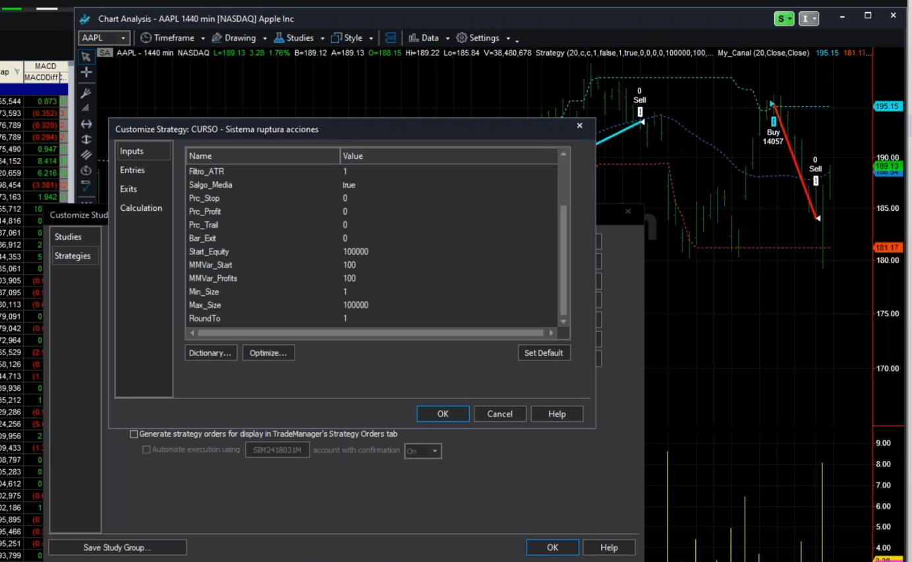
Pero recordad que no todo input debe ser optimizado; de hecho, casi siempre es así: la mayoría de los inputs son de configuración —lo que llamamos “al core”— y no tienen por qué tocarse o, simplemente, como en este caso, son instrumentales, es decir, de análisis.
Estamos, podemos decir, en una fase de evaluación preliminar, de crear nuestra idea y construir nuestro sistema. Una forma de hacerlo es implementar varias posibilidades en el código para que, mediante la observación, la optimización y distintas herramientas, yo pueda ir construyendo la idea, partiendo ya de una ventaja que sé que existe y que he evaluado de manera sencilla; a partir de ahí, la vamos a ir edificando.
Diario y semanal: pocos trades y optimización instrumental
En sistemas diarios y más aún semanales (este lo podíamos haber hecho perfectamente semanal, pero no he querido irme de entrada a un extremo; veremos sistemas semanales, pero ahora prefiero un término medio), ocurre que un diario muchas veces tiene muy pocos trades como para permitir un proceso de optimización “al uso” (para elegir parámetros). Aun así, sí puedo realizar optimizaciones instrumentales para analizar información, construir mapas o perfiles de optimización (como vimos con Excel) y ver cómo se comporta el sistema ante distintos parámetros.
Por ejemplo, los canales de Donchian por defecto o definición se calculan en 20: pero yo ahora puedo ver cómo va con otras variables 20-19-18, o pasarlo al optimizador, exportarlo a Excel y analizarlo en una tabla. Entonces “optimizo”, pero no para elegir o cambiar el parámetro, sino para entender cómo se mueve el sistema ante cambios. Además, lo puedo hacer en un activo o en varios; a partir de diario es más que recomendable —en intradiario también—, pero en diario diría obligado, y en semanal/mensual, ultra-obligado.
Cómo trabajamos una idea: búsqueda dirigida y concepto primero
Llegamos a la idea: imaginemos que ya hemos encontrado una idea de sistema.
Búsqueda dirigida vs fuerza bruta
Veremos muchas ideas y algunas mediante código; no tardaremos en hacer una clase de búsqueda de ideas a través del código, pero muy dirigida. La gran diferencia entre nuestras búsquedas dirigidas y los buscadores por fuerza bruta es que aquí la búsqueda está totalmente dirigida, muy cerrada y central. Yo marco cuatro, cinco o seis cosas a buscar y ya las he elegido yo.
El problema de los programas “todo-terreno” es que la búsqueda es tremendamente variable; además, modifican inputs de la propia idea, y eso deriva en sobreoptimizaciones muy fáciles. Aquí también podríamos caer en ello, pero es más difícil, porque parto de un principio, de un concepto.
Ese es siempre lo importante y necesario.
Setup de entrada y variantes de ruptura
Hemos cargado el file en TradeStation:
# file : PRACTICA 02.ELD
Strategy - CURSO - Sistema ruptura accionesOs enseño el código porque ahí voy a explicarlo; pero no es lo importante ahora. El código, como he dicho en la teoría, es una herramienta, ni más: es la forma en que el ordenador me entiende.
¿Cuál es el setup de entrada general del sistema? Respecto a la semana pasada, he incorporado una pequeña variación, y ahora os voy a explicar las dos o tres variantes que hay de Donchian, o cómo interpretar una ruptura.
Esto no sirve solo para Donchian: sirve para cualquier ruptura.
Hay un componente de gusto y un componente de probar para ver cuál puede ir mejor en cada activo, pero hay bastante consenso.
Setup: Entrada estándar
Inputs:
Per_Canal(20),
Price_Up(Close),
Bar_Filtro(0);
Vars:
MP(0);
// Alias de posición
MP = MarketPosition;// TÍPICO SISTEMA DE RUPTURA: el cierre supera el máximo del CIERRE DE 20 barras
if Close > 0 and Condition1 and MP <> 1 and (BarsSinceExit(1) >= Bar_Filtro or TotalTrades = 0) then
Begin
if Close > Highest(Price_Up, Per_Canal)[1] then
Buy Contratos contracts Next Bar at Market;
End;Esto viene a decir: si el cierre de una vela es mayor (o igual) que
el mayor cierre de las últimas N barras —por defecto 20, marcado por el
input Per_Canal—, entonces compra en la apertura de la
siguiente barra el número de contratos correspondiente.
📝 Notas sobre el operador de
comparación
Usar > (mayor estrictamente) — la opción más
común
If Close > Highest(Price_Up, Per_Canal)[1]
then
Ventajas: Más robusto ante datos con cierres repetidos.
Genera menos operaciones falsas.
Desventajas: Puede entrar
una vela más tarde (pierde algo de inmediatez).
Usar >= (mayor o igual) — ruptura más
sensible
If Close >= Highest(Price_Up,
Per_Canal)[1] then
Entrada estándar:
>
(mayor estrictamente) para evitar señales duplicadas o falsas. Reserva
>= únicamente para activos discretos o series con baja
variación de precios.
if Close > Highest(Price_Up, Per_Canal)[1] then
Buy Contratos contracts Next Bar at Market;¿Por qué [1]? En
Highest(Price_Up, Per_Canal)[1] usa el máximo de las
últimas N barras excluyendo la barra actual, evitando
look-ahead. El look-ahead bias (sesgo de anticipación
o de “mirar hacia adelante”) ocurre cuando, sin darte cuenta, tu sistema
usa información que en la realidad aún no existía en el momento de la
decisión.
[1] impide el uso de datos del futuro (look-ahead
bias). Cualquier referencia sin este desplazamiento invalidaría el
backtest al incorporar información no disponible en el momento real de
la decisión.
La diferencia que he hecho hoy es incorporar el uso del cierre de manera explícita. El otro día lo dejé con cierres a propósito, porque quería forzar el debate: lo habitual en un canal de Donchian no es usar el cierre como máximo, sino usar el máximo (high).
Esta línea (el canal azul de Donchian) de la siguiente imagen pinta los máximos de 20 velas pero de los cierres.
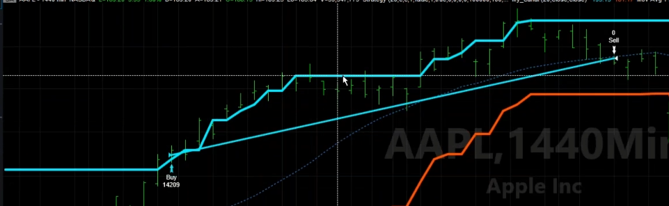
Yo puedo pintarlo de lo que quiera.
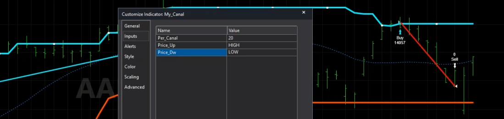
Puedo hacerlo del HIGH y del LOW, que es lo habitual; y en la siguiente imagen ahora sí veréis que es el máximo. Es el máximo hasta la vela en curso (si no, nunca rompería). Se entiende: si cuento el máximo de la vela en curso, no rompe nunca. Entonces es el 20 hasta el anterior; ahora está hecho con máximos y mínimos: este es el canal habitual.
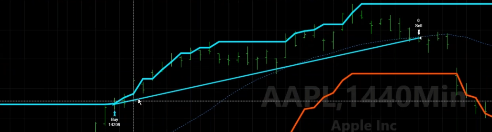
Por qué priorizar el cierre en diario (y cuándo no hacerlo) — Cierre como señal dominante en diario
Una de las reglas que nosotros más usamos para elegir esto es que, en diario, cuando trabajamos la base diaria, el cierre lo consideramos muy importante; por lo tanto, normalmente —y todavía más en acciones—, preferimos calcular máximos y mínimos con los cierres.
En este ejemplo no lo he probado aún; lo podemos probar ahora; pero creo que funcionará mejor —o, al menos, me genera más confianza y seguridad— que los máximos y mínimos se calculen con cierres. ¿Por qué? Porque el cierre es el final de un periodo. El mercado abre la sesión, acaba a las 22:00, hay una larga pausa y vuelve a abrir. Hay mucho operador intradiario que abre y cierra posición durante el día, y el precio de cierre define mejor que el máximo o mínimo la tendencia de fondo del activo. Esto es especialmente cierto en activos con largas pausas, como las acciones.
En futuros, si la vela diaria está construida con el Globex
(23h), seguramente es menos relevante; pero si vas a operar el futuro en
horario regular (15:30–22:00), ocurre lo mismo: hay muchas horas de
pausa, y el cierre gana importancia. En estos casos, nos gusta trabajar
con el campo Close, más que con
High/Low.
Intradía: cierre irrelevante; usar High/Low o Typical Price
Si fuera sistema intradiario, entonces 100% el cierre de una
vela de cinco minutos tiene casi cero relevancia; importa entre 0 y 0,1.
Ahí, el cierre no dice nada: o bien usamos máximos/mínimos, o
un precio centrado como el TypicalPrice (media de High, Low
y Close: ((H+L+C)/3)), que es un precio más centrado.
Input de cálculo del canal
(Price_Up)
if Close > Highest(Price_Up, Per_Canal)[1] then
Buy Contratos contracts Next Bar at Market;Como aquí, de entrada, empezamos con acciones, definimos los canales
con campo Cierre; por eso, en el código, Price_Up
lo he dejado como input de configuración, para poder cambiar
rápido si quiero calcular el canal con Close, High o Low:
input:
Per_Canal (20),
Price_Up (Close),Y lo puedo cambiar desde aquí:
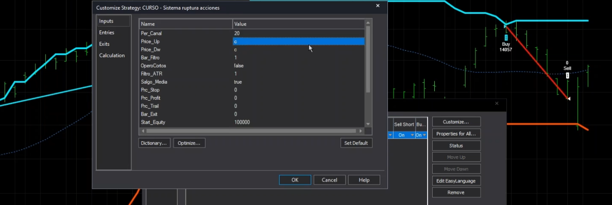
También podría hacerlo con TypicalPrice; puedo
escribirlo directo:
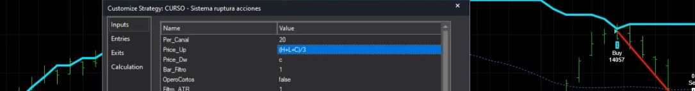
TypicalPrice también funciona porque es una función que
devuelve un precio en el código. Si no existiera como función, me daría
error. Cualquier valor que devuelva un precio lo puedo usar ahí.
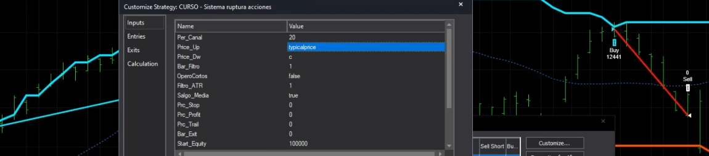
Price_Up puede alternarse fácilmente entre
Close, High, Low o
TypicalPrice para observar cómo cambia el comportamiento
del sistema. Esta flexibilidad es clave en la fase de evaluación
preliminar: se busca entender la sensibilidad del modelo ante
diferentes tipos de precios, no optimizar el valor “perfecto”.
Evaluación del setup básico y simetría riesgo/beneficio
Vamos a centrarnos en este punto:
El cierre de la vela que ves marcada en la imagen es el que rompe el canal superior (línea azul). Ese cierre por encima del canal es el que genera la señal de entrada. Por tanto, el sistema ejecuta la compra en la apertura de la siguiente vela. Para que esto funcione correctamente, el canal debe calcularse hasta la vela anterior, sin incluir la barra actual. Si el canal incluyera la vela en curso, el cierre nunca podría superar su propio máximo, y la ruptura no se produciría.
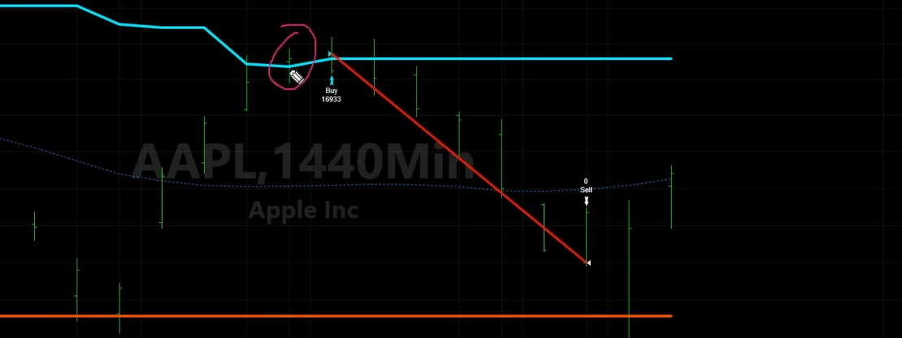
Entonces este ejemplo corresponde al setup básico. Por ahora, al sistema le retiramos la salida central para centrarnos solo en la salida simétrica, y después analizaremos las demás (salida por media, trailing, etc.). Empecemos evaluando esta primera configuración:
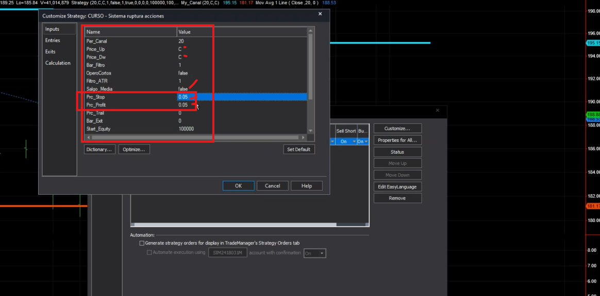
En esta prueba hemos fijado un riesgo (Stop) y un profit target idénticos: ambos al 5% (0.05). De este modo, el sistema solo puede cerrar posiciones mediante esta salida —no hay cierre por número de barras, por trailing stop ni por ninguna otra condición—.
El objetivo es igualar el ratio win/loss, para evaluar el comportamiento puro del setup sin sesgos externos. Esta configuración sirve para medir la eficiencia del patrón de entrada sin interferencia de gestión monetaria.
# menu chart TradeStation
Data → Strategy Performance Report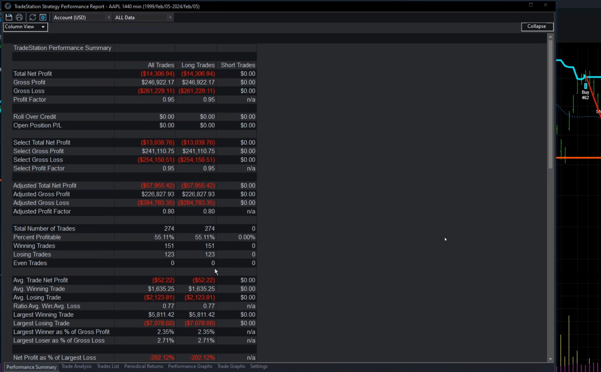
En esta configuración inicial el sistema arroja pérdidas:
Por tanto, el setup base no es rentable en este punto.
Segunda prueba: ajuste del rango de riesgo/beneficio
Aumentamos el rango a 0.10 / 0.10, manteniendo la simetría pero con un espacio más amplio para que las operaciones respiren.
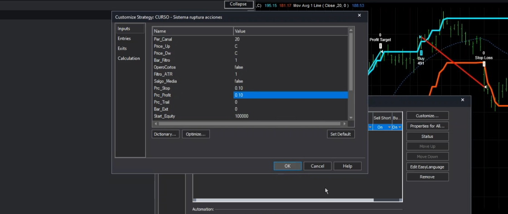
Con esta modificación los resultados mejoran significativamente:
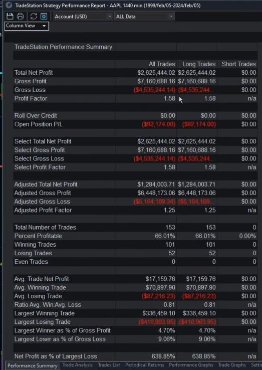
Interpretación:
Esto demuestra que el setup de entrada es sólido, aunque aún con margen de mejora en la gestión de riesgo monetario.
Configuración monetaria y control de tamaño
Ahora bloqueamos el número de acciones para uniformar la gestión monetaria. De este modo eliminamos distorsiones provocadas por el cambio de precio del activo a lo largo de los años (acciones de Apple desde pocos dólares hasta más de 180 USD).
Properties for All...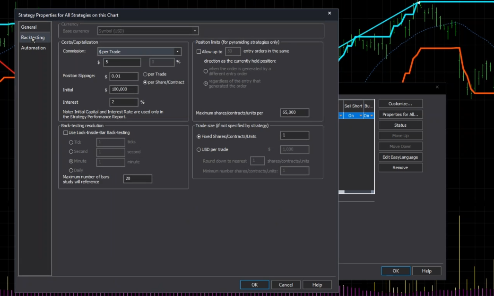
Customize...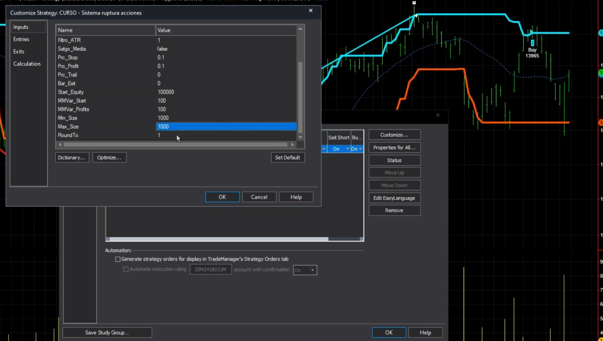
Fijamos el tamaño a 1,000 acciones constantes. Esto permite comparar trades históricos de forma homogénea y mantener un riesgo porcentual estable.
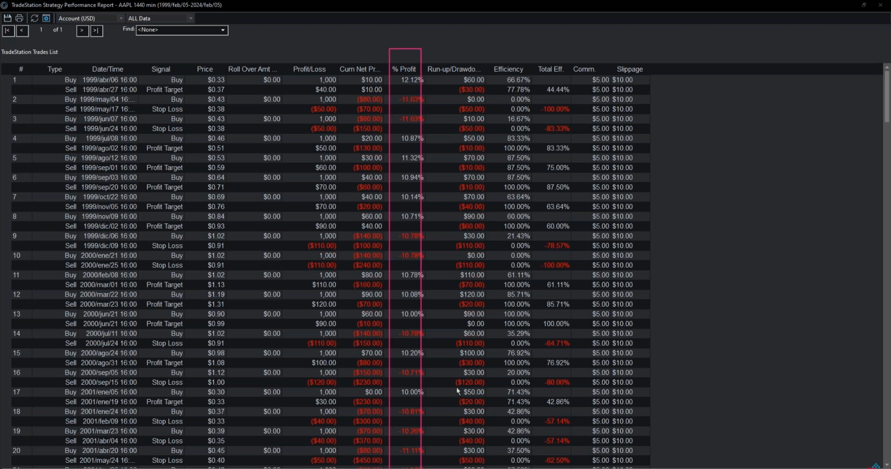
Aun así, observamos que las variaciones monetarias entre épocas siguen siendo elevadas: las operaciones mantienen un riesgo relativo del ~10%, pero el valor absoluto varía con el precio del activo.
Diferencias monetarias a lo largo del histórico
Lógicamente en dólares, a medida que va avanzando, pues cambia bastante porque depende bastante del precio del activo. Estamos hablando ya de lo que tengo cargado, 25 años, los cargados 25 años, pues claro tenemos compras aquí a céntimos y compras aquí a 180 dólares. Entonces el problema de las acciones es muy importante, la diferencia es gigantesca. Los trades son del orden del 10 por ciento, pero el valor monetario no es del orden del 10 por ciento, es imposible.
Si lo hubiéramos hecho el Stop Loss en valor monetario ecualizaría mejor en ese sentido, en el sentido de los ratios. Pero ahora mismo eso me da igual, no me importa, simplemente era para que lo ecualizara a un nivel de riesgo en porcentaje igual o muy parecido. Y aquí como tenéis eso me lo calcula, luego yo en Excel lo podría calcular como quisiera, ya lo visteis que lo hicimos y con muchos fitness y demás. Pero aquí el ratio me lo calcula, pero bueno, todo caso ya se ve que es claramente, claramente tiene un avg y un porcentaje de aciertos bastante elevado. Es decir, el setup de entrada en sí es bueno, es claramente bueno y permite seguir trabajando con él, que es lo que queremos.
✅ Conclusión parcial:
El setup base, con una ruptura Donchian clásica
(Close > Highest(Price_Up, Per_Canal)[1]) y gestión
simétrica 0.10 / 0.10, demuestra una estructura
robusta: una tasa de acierto del 66% y un profit
factor superior a 1.5.
Esto confirma que la lógica de entrada tiene validez estadística y es apta para seguir construyendo sobre ella —por ejemplo, añadiendo filtros direccionales o salidas adaptativas—.
XLKComo ya comentamos, es esencial probar el sistema en distintos
activos. Aquí lo aplicamos sobre el ETF sectorial de tecnología
XLK.
Mientras se carga el gráfico en TradeStation, volvemos brevemente al código:
Gestión monetaria dinámica
He incorporado una gestión monetaria dinámica, es decir, una lógica que ajusta el número de contratos en función del capital disponible y del precio del activo.
# { Money Management }
Profits = NetProfit + OpenPositionProfit;
If AbsValue(Close * BigPointValue) > 0 Then
Value1 = AbsValue(Close * BigPointValue)
Else
Value1 = 0.01;
Contratos = ((Start_Equity * MMVar_Start * 0.01) + (Profits * MMVar_Profits * 0.01)) / Value1;
Contratos = IntPortion(Contratos / RoundTo) * RoundTo;
Contratos = MaxList(Contratos, Min_Size);
Contratos = MinList(Contratos, Max_Size);Esto, como recordáis, es especialmente recomendable en activos con gran variación de precio, ya que permite ajustar el tamaño de las posiciones a lo largo del tiempo. De lo contrario, un mismo número de acciones implicaría riesgos completamente diferentes.
# chart TradeStation: doble click en icono de entrada de la estrategia
Customize Studies & Strategies > Properties for All...Customize Studies & Strategies > Customize...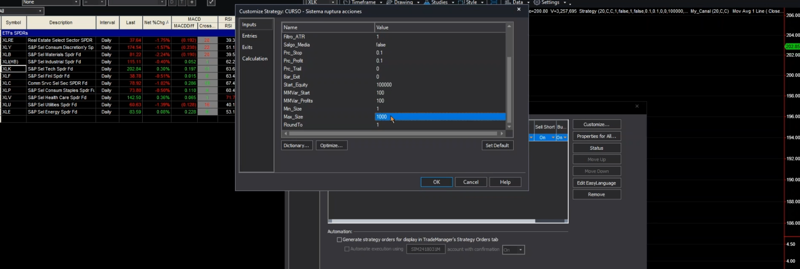
La lógica implementada es muy sencilla y puramente nominal (no basada en riesgo o volatilidad):
Contratos = ((Start_Equity * MMVar_Start * 0.01) + (Profits * MMVar_Profits * 0.01)) / Value1;En esta parte del código, la fórmula invierte aproximadamente el 100% del capital disponible en cada operación, ajustando el tamaño en función del precio del activo. Cuando el precio sube o baja (por ejemplo, de $1 a $300), el número de acciones se recalcula automáticamente, manteniendo una exposición constante en porcentaje.
📊 Gestión monetaria dinámica: cómo
funciona
La estrategia está haciendo gestión monetaria dinámica, es
decir, el número de contratos o acciones (Contratos) no es
fijo, sino que se recalcula en cada operación según el valor total de la
cuenta (equity) y el precio del activo
(Close).
Cada vez que cambia el precio del activo, cambia el tamaño de la
posición, para mantener una exposición más estable en términos de
porcentaje de la cuenta. De esta forma, el sistema mantiene la misma
exposición en porcentaje, aunque el precio del activo cambie
drásticamente.
| Precio de acción | Capital | Nº acciones aproximado | % invertido |
|---|---|---|---|
| $1 | 10,000 $ | 10,000 acciones | 100% |
| $300 | 10,000 $ | 33 acciones | 100% |
⚠️ El problema del lote fijo en backtests
largos
Si usaras un lote fijo (por ejemplo, 1.000 acciones) durante
25 años de datos:
Eso distorsiona completamente los resultados del backtest,
porque el riesgo y la exposición crecen con el precio del
activo.
No significa que el sistema esté apalancado o que eso sea lo ideal para operar real. Significa que, para fines de backtesting y comparación, la estrategia:
Por eso, esta aproximación es más razonable para estudios históricos, aunque no sea el enfoque exacto que usaríamos en operativa real. Permite comparar resultados entre épocas sin que los precios extremos alteren la evaluación del sistema.
La entrada sigue siendo la ruptura clásica de Donchian:
Begin
if Close > Highest(Price_Up, Per_Canal)[1] then
Buy Contratos contracts Next Bar at Market;
End;Es decir, cuando el cierre actual supera el máximo de las últimas N barras (por defecto 20), se compra en la apertura de la siguiente. Este tipo de entrada es la base del Donchian Channel Breakout clásico.
El activo XLK (tecnología) es altamente tendencial a
largo plazo, por lo que el lado largo tiende a generar resultados
positivos de forma más estable.
Reglas de salida
Tal y como está configurado ahora mismo, el sistema entra solo por Donchian y sale por un Take Profit del 10%.
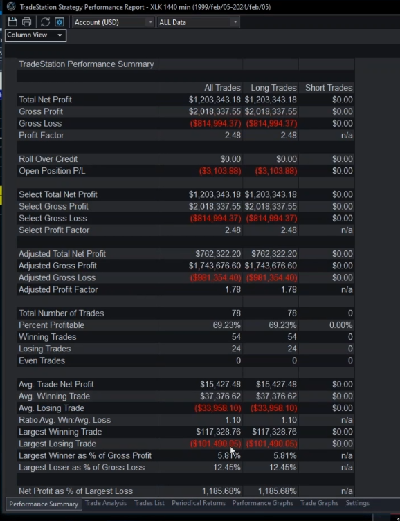
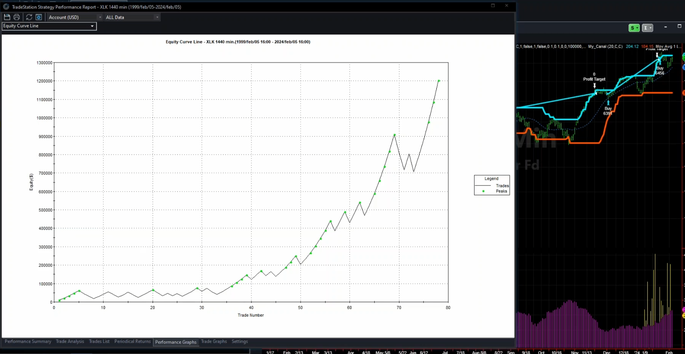
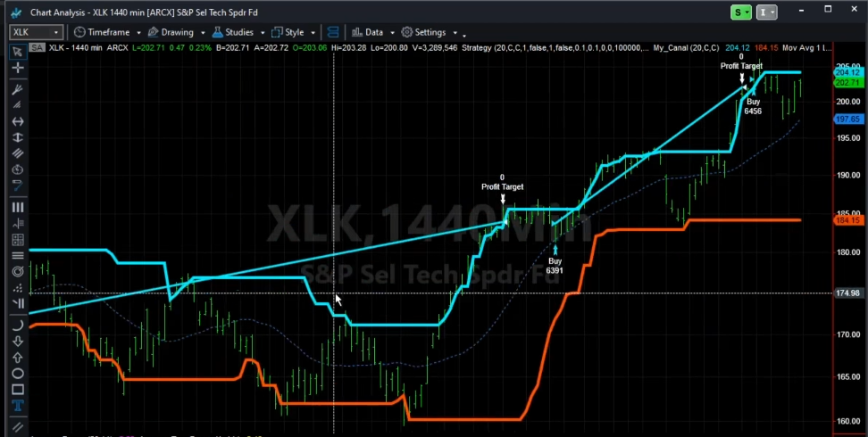
El Donchian original no define una salida precisa; muchos autores interpretan que la posición debe mantenerse hasta una ruptura contraria, lo que implica una salida muy tendencial.
En cambio, aquí incorporamos una salida por media central, más reactiva.
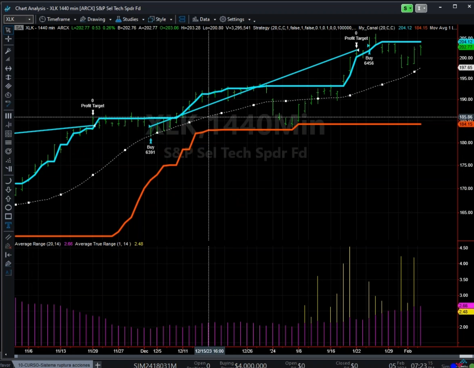
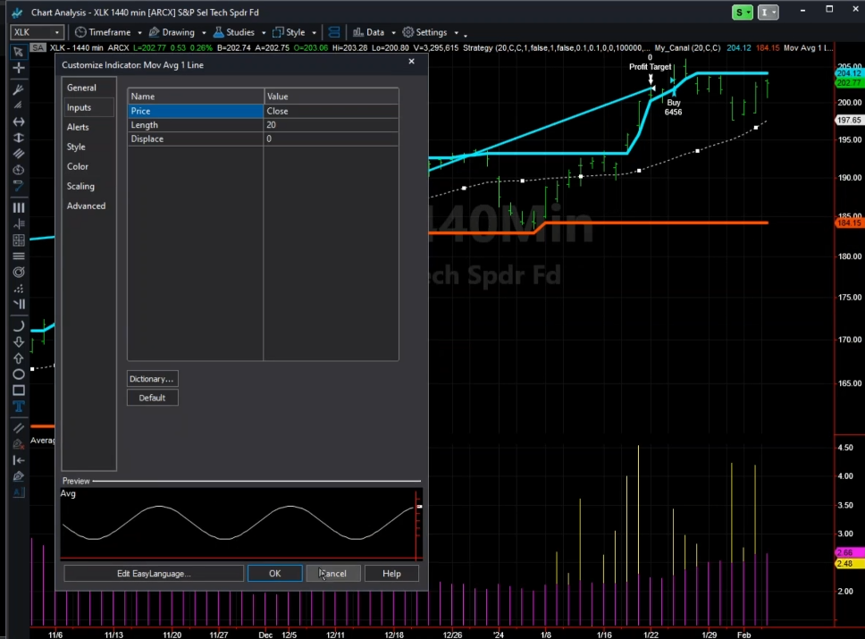
Esta media blanca representa la media de los 20 cierres previos, coincidiendo con el período del canal Donchian.
Salida por media central de 20 cierres previos con SL/TP 10%
input:
Salgo_Media (false)Este control booleano (Salgo_Media) permite
activar o desactivar fácilmente esta regla desde los
parámetros del sistema.
// salida por la media central del canal Donchian
If Salgo_Media Then
Begin
If Close < Average(Close, Per_Canal) Then
Sell next bar at Market;
If Close > Average(Close, Per_Canal) Then
Buytocover next bar at Market;
End;Además también tiene metido el SL/TP 10%, que se lo podría perfectamente quitar.
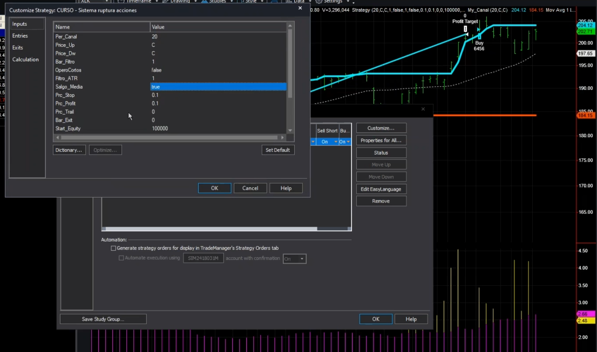
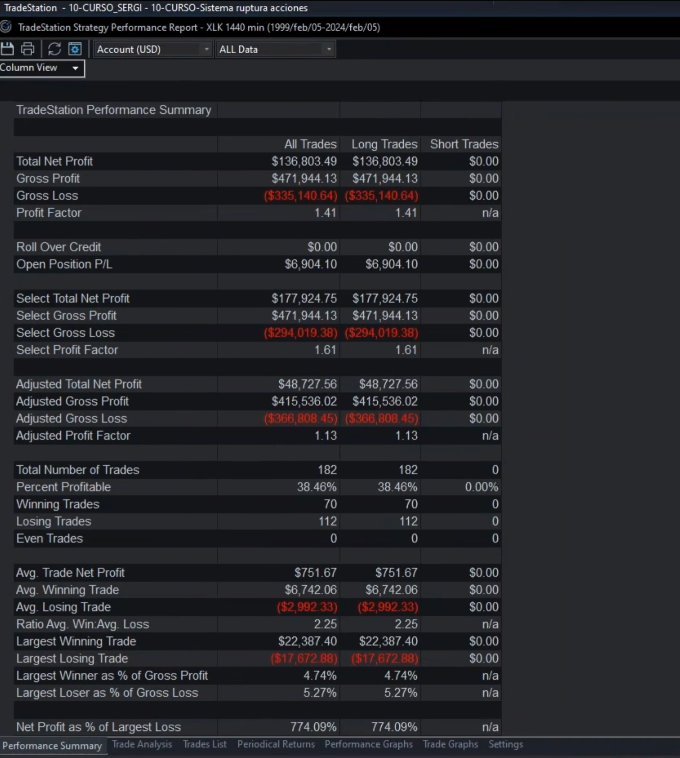
Salida versión tendencial: por media central de 20 cierres previos (sin TP/SL)
Ahora desactivamos el Stop y el Take Profit (ambos a 0) para dejar que el sistema siga la tendencia completa.
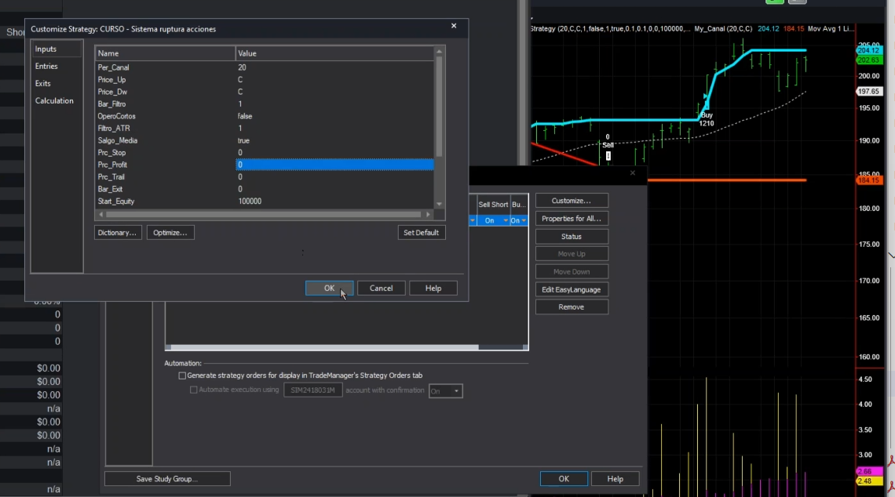
De este modo, las operaciones permanecen abiertas hasta que el precio
pierde la media central, o bien se produce una señal
opuesta. Esto permite capturar grandes tramos de tendencia, aunque
también implica soportar retrocesos más amplios. También
se podría poner en el lado corto, veríamos cómo degrada
mucho, pero puede hacerse.
Fuentes de las variantes de salida
Luego por supuesto todo esto lo evaluaremos, ahora simplemente lo estamos planteando, vamos planteando posibilidades. ¿De dónde las sacas? Estas las saco de la conferencia, me dices. Hombre, la entrada en este caso hay muchas que las sacaré completas de manuales. Ella ya habló de este libro y veremos, esto no es este libro, bueno seguramente casi todos los libros manuales completos van de Donchian y este libro habla de todos, así ahora no recuerdo, yo estoy seguro que habla de Donchian. Entonces bueno, no está sacado específicamente de él, pero también está ahí, están esos artículos que habéis visto de Stock & Commodities, está por internet.
Pero Donchian como tal no es un setup claro de entrada que tenga una salida, pero sabemos que es una entrada tendencial. La estamos probando en gráfico diario y por lo tanto pues al final puedo salir o bien no salir, o bien no salir por TP y poner solo stop, o bien salir mediante alguna salida también un poco lenta como la media. También podría probar y lo probaremos: habilito otra vez esta salida, no le meto el TP y le saco por esto de un 5%, y ahora solo va a salir si cae un 10%.
Salida con Stop Loss y Trailing Stop
Otra variante que probamos consiste en mantener el TP deshabilitado y salir únicamente con Stop Loss o Trailing Stop dinámico.
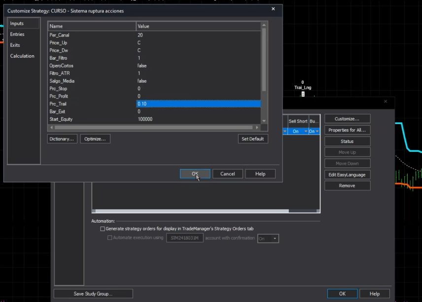
Un Trailing Stop actualiza continuamente el nivel de salida a medida que la posición avanza a favor. En el caso de posiciones largas, se mueve con el High (máximo alcanzado), restándole un porcentaje definido (por ejemplo, 10%). Esto permite capturar el movimiento principal y proteger beneficios sin salir prematuramente.
// Trailing Stop
If Prc_Trail > 0 Then
Begin
If MP <> 1 Then
Trailing_Long = 0;
If MP <> -1 Then
Trailing_Shrt = 99999;
Begin
if MP = 1 then // Para posiciones largas
begin
Trailing_Long = maxList(Trailing_Long, High - (High * Prc_Trail));
Sell ("Trai_Lng") next bar at Trailing_Long stop;
end;
if MP = -1 then // Para posiciones cortas
begin
Trailing_Shrt = minList(Trailing_Shrt, Low + (Low * Prc_Trail));
BuytoCover ("Trai_Shrt") next bar at Trailing_Shrt stop;
end;
End;
End;Así, el trailing protege beneficios acompañando el movimiento favorable del precio, sin reducir nunca la distancia una vez que el precio se aleja en contra.
Trailing al 20%: tendencia pura
Un 10% de SL es un trailing un poquito más holgado, y de hecho en tendencia larga hay muchos autores que hacen esto al 20%.
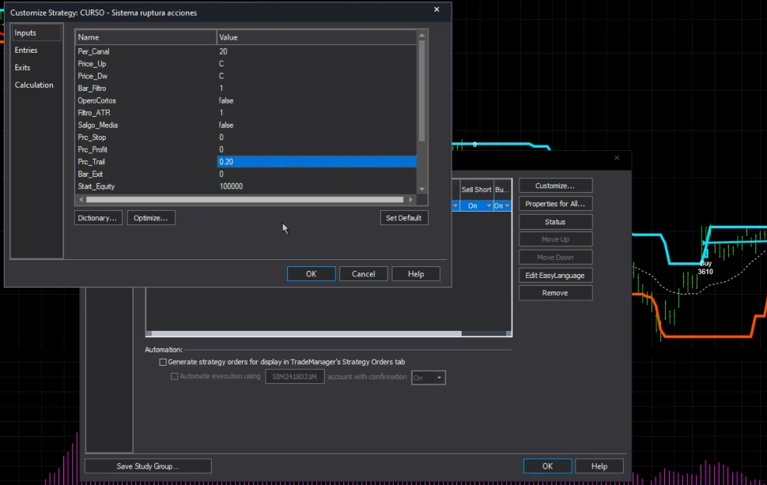
Salen a 20%, consideran que es una tendencia bajista y se salen a 20% de caída, que es bastante. Pero como todo tiene su parte buena y su parte mala: quiere decir que vas a devolver mucho al mercado, pero te va a mantener dentro en las grandes tendencias. La única manera de mantener las grandes tendencias es esa. Pues es demasiado, te va a dar un drawdown muy elevado, pero como vais a ver el retorno da muchísimo, es el que más retorno da.
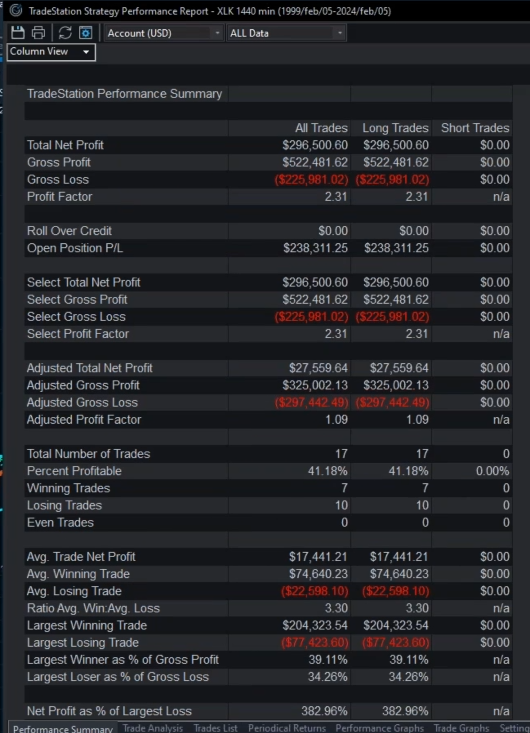
Da Profit Factor de 2.31, solo 17 operaciones, pero al final pues se consigue subir.
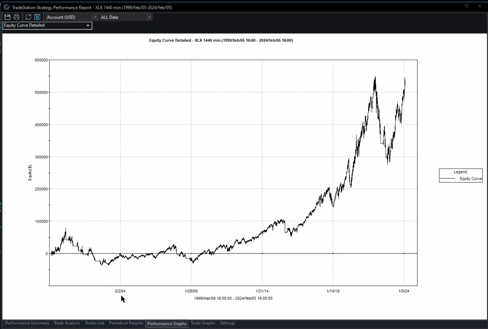
El problema es cuando hay toda esa costa de caída, pues como vais a ver bastante elevados, del 60% y demás.
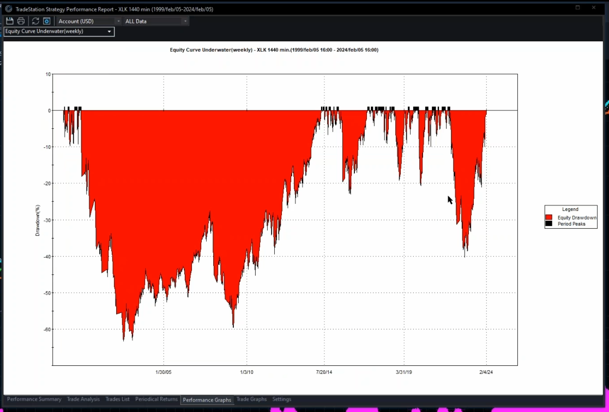
Este es el ejemplo, no tiene por qué ser en este caso tan extremo, para nada es recomendable así, pero es el caso extremo de lo que os decía de tendencia. Así sí que voy a tendencia puro, y veréis ahí que tengo un ratio de aciertos del 41%. ¿Cómo es tendencial puro? Porque deja correr mucho los beneficios, acierta 41% de las operaciones pero tiene un ratio avg win/loss de 3.30, espectacular, muy elevado, más de tres veces lo que pierde.
Pero claro, se deja mucho en el camino y provoca grandes riesgos.
Nota: Este se podría dejar como un setup de salida en tendencia y luego buscar uno más rápido, simplemente usar este bastante más acelerado como ya teníamos puesto, por ejemplo la mitad, en 10%.
Trailing al 10%: equilibrio tendencial
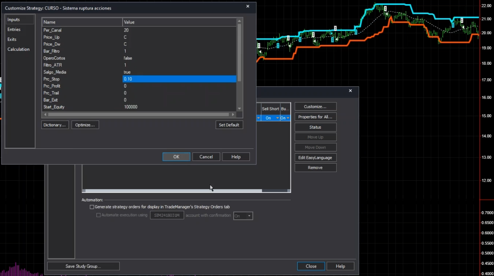
Donde va a seguir siendo tendencial pero menos, a ver qué va a estar ahí, seguramente 45% por ahí quizás.
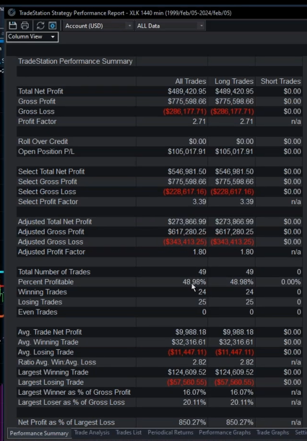
49% de profitable, incluso se acerca bastante al 50%, ya está casi equilibrado ahí en acierto con fallos, pero con un average win/loss de casi 3, en 2.80. Como veis, un Profit Factor muy elevado, ha bajado el drawdown prácticamente a la mitad.
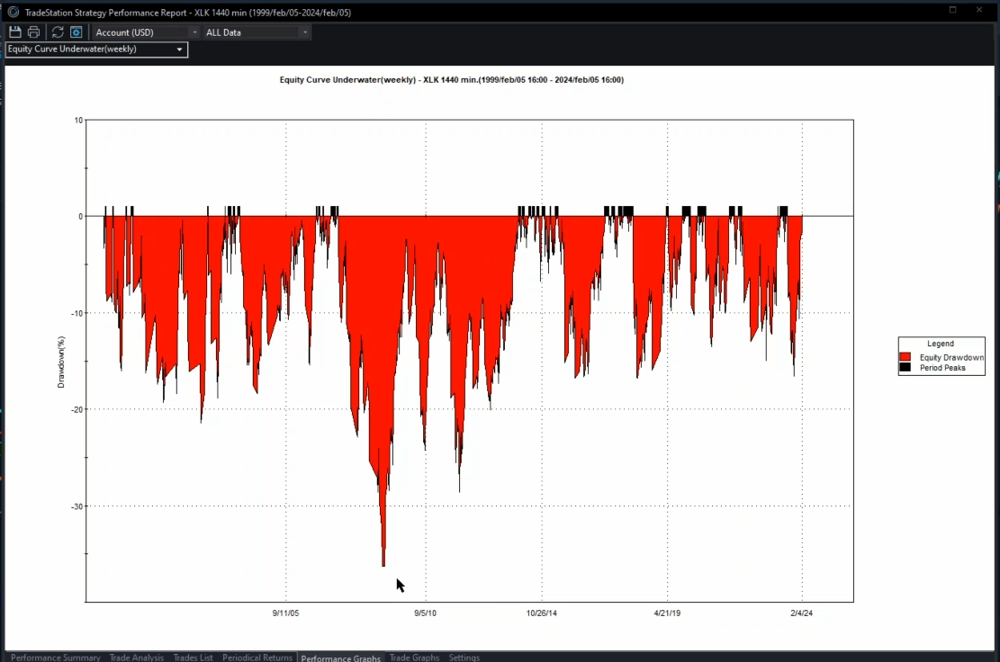
Pero al final está controlando un poco mejor el riesgo. Esta es entrada Donchian, salida trailing, nada más.
⚙️ Nota de implementación
Este sistema, tal como está planteado, constituye un setup
que probablemente —esto tendremos que evaluarlo— sería válido por sí
mismo. No me refiero necesariamente a esta configuración concreta de
inputs de Donchian y trailing stop, sino al conjunto
estructural del sistema. Fijaos que, en este punto, estamos manejando
esencialmente dos inputs principales. Hay más elementos, pero
ahora mismo la atención se centra en esos dos.
Si quisiéramos construir un mapa de optimización, lo
haremos más adelante; no quería introducirlo todavía para mantener el
enfoque conceptual. En la próxima sesión, trabajaremos precisamente eso:
veremos cómo plantear la optimización, cómo configurarla correctamente y
cómo interpretar los resultados. Hoy el objetivo era definir las
variantes del sistema —dejarlas estructuradas— para que, en la
siguiente fase, podamos analizarlas cuantitativamente.
Este setup, con entrada por Donchian y
salida por trailing stop, ya podría considerarse un
sistema completo.
Una vez hecho esto, pasaríamos a analizarlo mediante una
optimización controlada, permitiendo cierta oscilación
en los parámetros. Esto es importante, como expliqué antes, para
observar cómo varía el rendimiento y poder construir un perfil o
mapa de optimización, algo muy útil para comprender la
sensibilidad del sistema.
Configuración de referencia del setup
Entonces, este sería un posible setup. En este caso, lo
tengo cargado sobre un SPDR, que no deja de ser un
índice. Podemos verlo también aplicado a otro activo dentro de este
mismo setup, que —recordemos— es un sistema basado en
Donchian. En los ajustes
(Settings), se observa lo siguiente:
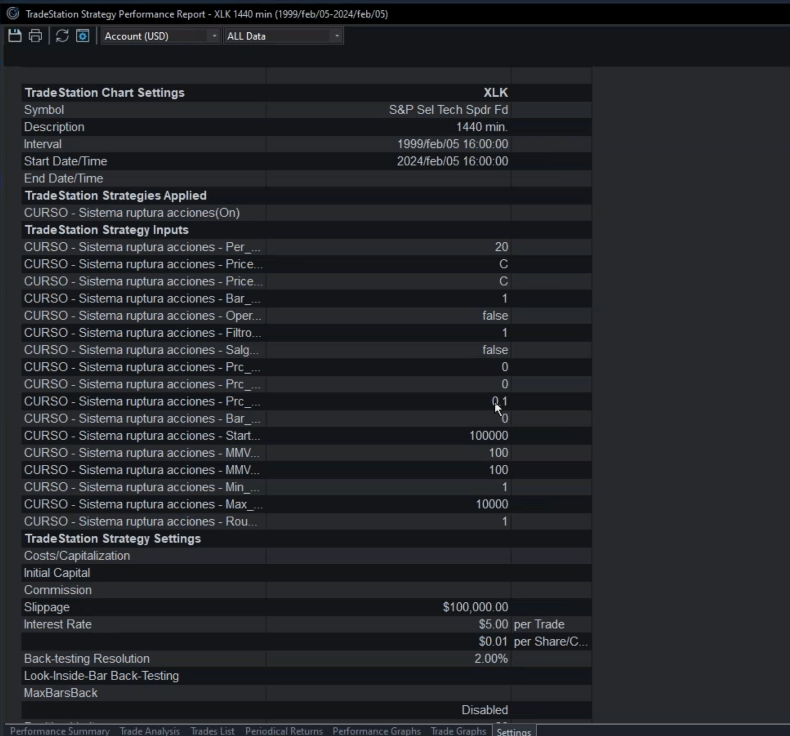
Este es, por ahora, el planteamiento de referencia. Más adelante
revisaremos otras configuraciones, pero este punto de partida ya nos
ofrece un Profit Factor de 2.71. Por ejemplo, puedo aplicarlo
al ETF XLF, que es un activo muy líquido, con un volumen
elevado y adecuado para este tipo de pruebas.
Por qué este podría ser un setup válido
Mientras tanto, os comento las otras variantes del código (no activas en este momento). ¿Por qué este podría ser un setup? Podría serlo porque:
Entonces, de entrada, quiero probar un setup muy básico y sencillo: si con él puedo ganar dinero y controlar el riesgo, vale.
Enfoque tendencial
Partimos de un planteamiento tendencial: si queremos capturar grandes movimientos, debemos dejar correr los beneficios. Y para dejar correr los beneficios, no debemos cerrar por Take Profit. El control del riesgo se realiza con un stop dinámico tipo trailing, que se mueve junto con el precio. Esto permite proteger las ganancias sin limitar el recorrido de la tendencia.
¿Podría usarse otro método? Sí: podría emplearse un
Parabolic SAR, o un
trailing anclado a cierres, o uno que solo devuelva un
porcentaje de las ganancias desde el máximo. Existen múltiples
variantes, pero esta versión —basada simplemente en el máximo y un
porcentaje fijo— es limpia, intuitiva y con un solo parámetro:
el porcentaje de distancia al máximo. Sencillo, claro, eficiente.
📏 Principio clave: Las reglas deben ser simples. No es necesario construir un trailing con tres o más variables; solo complica el sistema sin aportar valor real.
Este tipo de salida podríamos haberla diseñado cualquiera, sin importar el nivel de experiencia. La entrada procede de una fuente pública (revistas especializadas) y el trailing stop es igualmente estándar: ya está implementado como función nativa en la propia plataforma. Por eso, es una salida muy sencilla y transparente, perfecta para un primer setup robusto y verificable.
XLFSeguimos con más opciones, ya me ha cargado el sector financiero
XLF que es tremendamente volátil
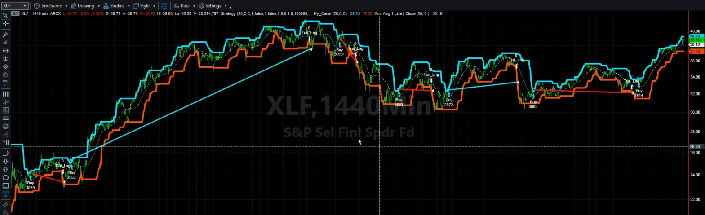
vale vamos a ver cómo queda con este mismo setup que tiene run-ups chulos con este 10% le da margen le da un margen interesante pero es aquí falsas entradas también que se las traga con patatas vale pero seguramente es bastante bastante profit
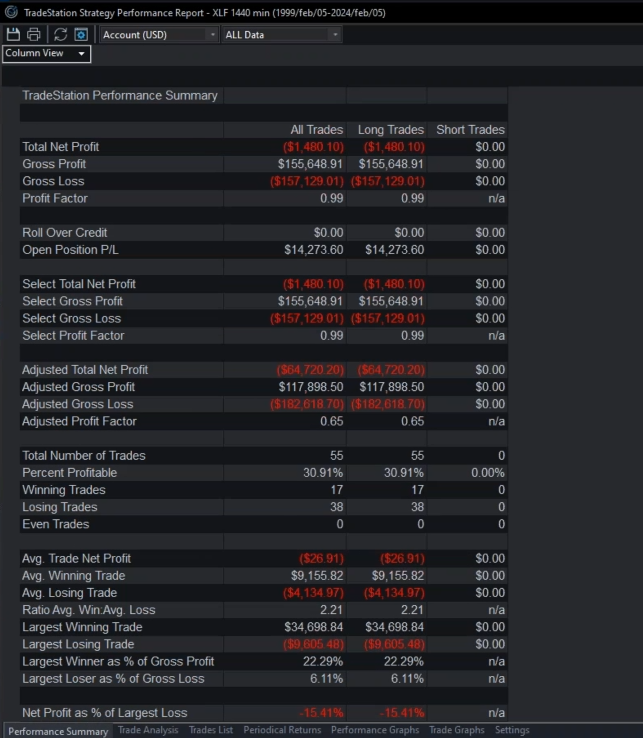
no es profit, no es porque mira que lo parece aquí
seguramente es por la parte final
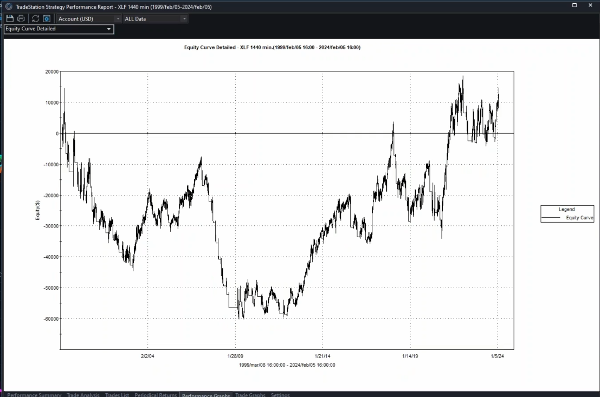
tiene un coste de comisiones muy elevado pero bueno se va adaptando se va adaptando el tema es que cuando compras muchas acciones que ahora te meten mucha mucha mucha slippage pero si si esta fase es tremendamente volátil que la caída se los traga se los traga todos
Bien, continuamos analizando las demás posibilidades. El otro día recordaréis que ya implementé la salida por tiempo, una opción que personalmente me gusta mucho. Sin embargo, si lo que buscamos es un setup tendencial, debemos asumir que no hay demasiadas alternativas: al final, hay que dejar correr el mercado y ver hasta dónde llega.
Las combinaciones posibles son limitadas, pero eso no es algo negativo. De hecho, una de las ventajas de tener pocos parámetros —o casi ninguno— es que el sistema conserva un margen real de optimización y de elección. Más adelante hablaremos en profundidad de los grados de libertad, pero por ahora basta con entender que cuantos menos parámetros intervengan, más fiable será la evaluación y más robusto el comportamiento del sistema.
salida por un número n de barras
// salida por tiempo, n barras
If Bar_Exit > 0 Then
Begin
if MP = 1 and barssinceentry > Bar_Exit then
sell("TimeL") next bar at open;
if MP = -1 and barssinceentry > Bar_Exit then
BuytoCover("TimeS") next bar at open;
End;¿Qué salidas hemos visto ya?
Bar_Exit (0) ya la implementamos el otro día.
En esta sesión hemos visto:
Prc_Stop (0.00) – porcentaje de stop
Prc_Profit (0.00) – porcentaje de profit
Prc_Trail (0.20) – porcentaje de trailing stop
Salgo_Media (false) – salida por la media central
La salida por la media central está actualmente activada. Esta salida utiliza la media central del mismo período que el canal de Donchian, es decir, calcula la media de los últimos n cierres (por defecto, 20).
También podríamos haber definido una salida en el canal contrario, una alternativa más de largo recorrido. Esa opción, de hecho, ya está implementada, porque TradeStation permite hacerlo de forma muy sencilla gracias a su estructura de programación.
Ahora vamos a activar los cortos:
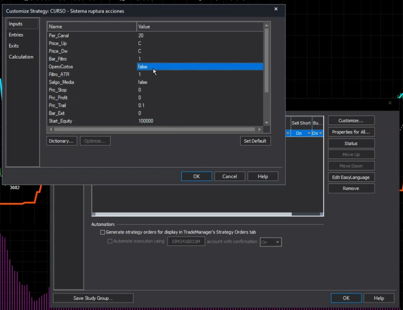
Para ello, contamos con una variable booleana
(OperoCortos) que controla si el sistema puede o no abrir
posiciones cortas. Al establecerla en true, el sistema
podrá operar también en corto.
Sin embargo, podemos hacer algo interesante: usar la señal del corto para operar en largo. Es decir, aunque el sistema detecte una señal bajista, podemos reinterpretarla para entrar en el lado opuesto. Esto permite estudiar cómo se comporta la estrategia al invertir las condiciones de entrada, aprovechando las rupturas en dirección contraria.
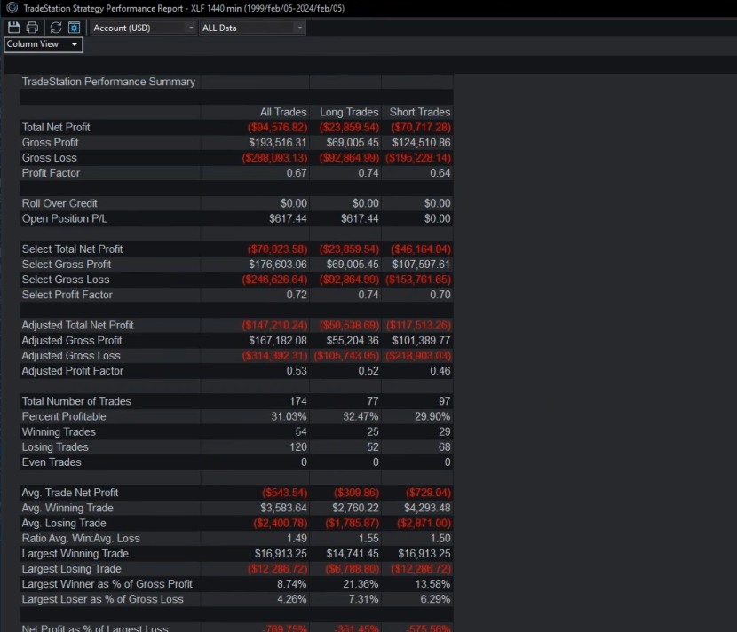
Como se ve, el corto aún rinde peor que el largo, lógicamente, pero
lo que voy a hacer es que la regla del corto y el
sell short se usen solo para exit only.
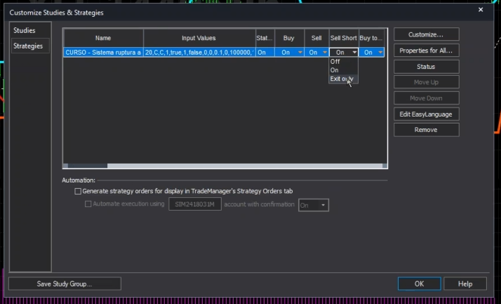
De esta manera, la regla del corto se utiliza para cerrar, junto con el stop correspondiente. Así, en el momento en que se produce una ruptura por la banda inferior, la posición también se cierra —además del trailing que tenga activo—.
El trailing podría eliminarse, y ese sería el caso extremo: entrar largo por la banda superior y salir únicamente por la inferior. Esa sería la versión más tendencial de todas, porque, cuando el sistema entra en una tendencia fuerte, tarda mucho en cerrar por debajo del canal.
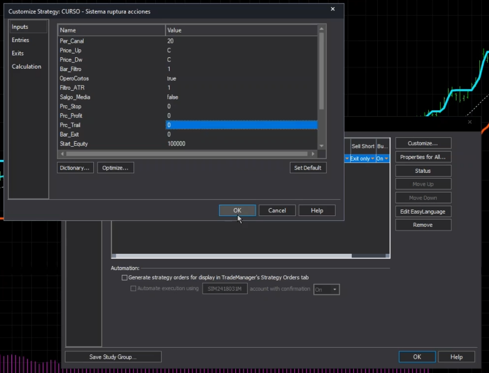
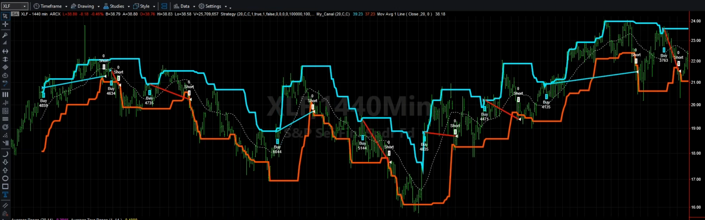
Aun así, sin take profit, obtiene 41 aciertos, pero no genera beneficios, probablemente por un conjunto de comisiones elevadas.
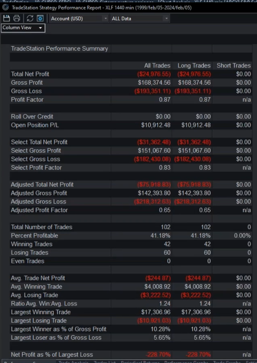
En la primera parte del histórico, se hunde durante 2008–2009 —la crisis de Lehman Brothers—, donde realiza muchas entradas durante la caída que no consigue evitar. Esa es la clave de cualquier sistema: no va a ganar dinero en mercados hostiles, pero tiene que sobrevivir. En esta versión, no lo logra del todo: después tiene buenos momentos, pero no logra compensar las pérdidas anteriores.
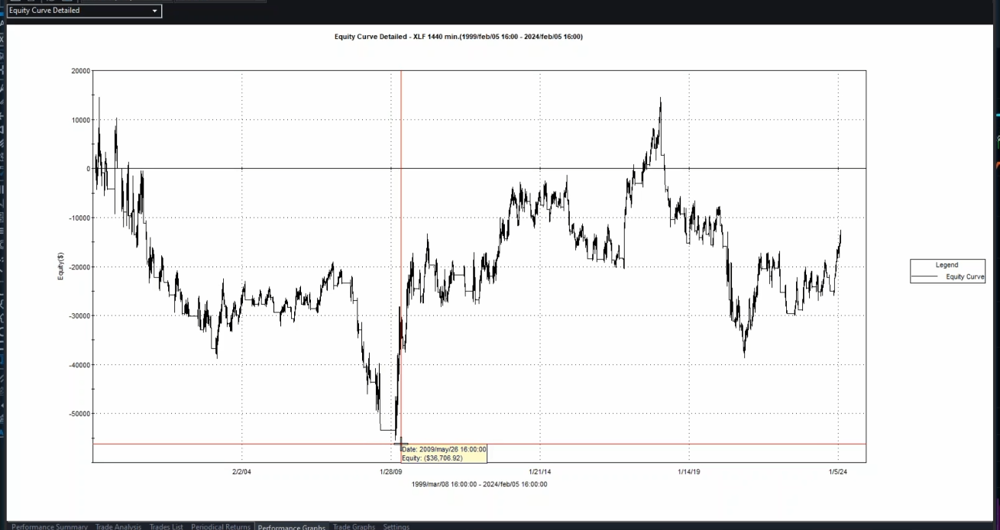
Volviendo al resto de las salidas vistas hasta ahora:
Bar_Exit (0) – salida por tiempo (ya
implementada).
Prc_Stop (0.00) – salida por stop-loss porcentual.
Prc_Profit (0.00) – salida por take profit
porcentual.
Prc_Trail (0.20) – salida por trailing stop
porcentual.
Salgo_Media (false) – salida por la media central.
…entonces vamos a desactivar los cortos; lo voy a dejar así para que
salga por la media, va a salir por el true. Le pongo que,
como mucho, esté por ejemplo 10 días, y que salga por la media.
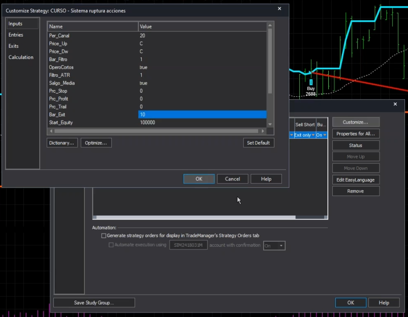
Y entonces, pues bien, sale o bien por la media o bien tras 10 días. En este caso, esto no tendría mucho sentido; tendría más lógica usar una u otra —o bien la salida por la media, o bien la salida por la banda—, pero no ambas simultáneamente. Por ello, anularía la salida por cortos (que activa la media y la banda contraria) y podría añadir un stop del 5 % para movimientos más rápidos.
En resumen: salgo por tiempo o por pérdida del 5 %, o por la media; no salgo por el canal contrario. Vemos que se trata de un setup muy distinto, realmente un sistema que permanece poco tiempo en el mercado y busca entradas rápidas y de corta duración.
Incluso aquí tendría más sentido, porque ya estoy fijando un tiempo de salida. Además, voy a añadir un profit target:
En este caso, usaré un ratio 2:1 —profit de 0.10 y stop de 0.05—. Más adelante explicaré otra cosa que solemos hacer: relacionar ambos, de forma que uno sea múltiplo del otro (por ejemplo, 1:1 o 2:1). Así, tengo 0.10 de profit, 0.05 de stop, y desactivo la salida por media y por tiempo.
Esta es una configuración bastante habitual: una combinación de stop, take profit y límite temporal. Es decir, si ninguno de los dos primeros se activa en un número determinado de barras, la operación se cierra igualmente. Es una estructura muy común en sistemas de rotura rápida o momentum, donde el objetivo es capturar impulsos breves.
Con este enfoque, el sistema mejora ligeramente: aguanta mejor los periodos adversos, aunque sigue mostrando debilidad estructural, especialmente en el ETF financiero.
En este mismo setup, para no complicar demasiado la explicación, repasaremos algunos posibles filtros de entrada.
Bar_Filtro**El primero es un filtro diseñado para evitar que ocurra lo que se observa en la imagen: una reentrada inmediata tras una salida. Es decir, una vez que el sistema cierra una operación, debe esperar un número determinado de velas antes de volver a entrar.
Esto tiene bastante sentido, ya que, sin ese control, el sistema
podría caer en un bucle de entradas y salidas continuas, generando ruido
y sobreoperación. Este filtro se gestiona mediante la variable
Bar_Filtro.
Ahora, como se observa, el sistema espera al menos tres barras antes
de permitir una nueva entrada. Este tipo de filtros es habitual y
recomendable, especialmente para quienes programáis estrategias: evita
que un sistema entre y salga en la misma vela, lo cual no tiene sentido
operativo. Una buena práctica consiste en establecer siempre una
condición mínima de espera entre operaciones, utilizando
BarsSinceExit.
// TÍPICO SISTEMA DE RUPTURA: el cierre supera el máximo del cierre de 20 barras
if Close > 0 and Condition1 and MP <> 1 and (BarsSinceExit(1) >= Bar_Filtro or TotalTrades = 0) then
Begin
if Close > Highest(Price_Up, Per_Canal)[1] then
Buy Contratos contracts Next Bar at Market;
End;El fragmento or TotalTrades = 0 asegura que la condición
también se cumpla si el sistema aún no ha realizado ninguna operación.
La variable TotalTrades cuenta el número total de
operaciones cerradas y permite controlar la lógica del sistema desde el
inicio. Es un filtro menor, pero útil para garantizar la coherencia de
la secuencia de operaciones.
El siguiente filtro es algo más elaborado y, de hecho, uno de los más importantes. Ya hemos mencionado en la parte teórica que la volatilidad es uno de los vectores más potentes tanto para operar como para gestionar el riesgo y ajustar la exposición monetaria. Puede utilizarse como filtro, como medida de gestión o incluso como componente principal de una estrategia.
En este caso, todavía no se ha implementado, pero podría incorporarse fácilmente una condición basada en volatilidad: por ejemplo, exigir que la vela actual sea más o menos volátil que las anteriores antes de permitir una entrada. Este tipo de filtros ayudan a calibrar las condiciones del mercado y a evitar señales falsas durante fases de compresión o exceso de ruido.
Filtro basado en tipo de precio
Además, conviene recordar que el canal de Donchian puede construirse de varias formas según el tipo de precio que se utilice para calcularlo. Hasta ahora hemos visto la versión donde la condición de entrada se cumple cuando el cierre supera el máximo de las últimas n barras.
Sin embargo, existe otra variante igual de válida:
// Buy Contratos contracts Next Bar at Highest(Price_Up, Per_Canal)[1] stop;En esta alternativa, la orden de compra se coloca directamente en
el nivel del canal superior —es decir, en el valor de
Highest(Price_Up, Per_Canal)[1]— sin esperar a que el
cierre lo supere. De esta forma, el sistema mantiene una orden stop
activa en el canal durante todo el tiempo, esperando que el precio
la ejecute cuando se produzca la ruptura real.
La diferencia es conceptual:
Ambos enfoques son válidos, y la elección depende del tipo de sistema que se quiera construir: uno más conservador y reactivo (por cierre confirmado) o uno más agresivo y anticipativo (por ruptura intrabarra).
Todo el rato la orden es la línea azul, hasta que entra; luego ya no.
Es otra posibilidad, una posibilidad que opera más rápida, con más fallos. A mí me gusta bastante así como está puesta ahora, pedirle un cierre por encima, pero depende, depende realmente. De hecho lo que os decía antes va todo un poco relacionado, y lo que también dije en las prácticas: esto es verdad que se cultiva con la experiencia. El sentido común muchas veces se cultiva mucho con la experiencia; sin experiencia es complicado tener sentido común en algo, porque al final se va adquiriendo por propia experimentación.
En lo que os decía antes de los cierres en relación al gráfico diario y demás: en el gráfico diario yo creo que nos gusta más esta manera que hemos planteado aquí, es decir, que cierre por encima de la banda. Pero en intradía seguramente iríamos más directo al canal, contando que te vas a quedar dentro, o sea, que vas a salir al final del día como máximo, en el que buscas una explosión. Ahí sí, ahí sí que entonces todavía será más importante filtrar.
El problema de filtrar según el timeframe
Pero es verdad que cuando vas a intradía, sobre todo si vas a timeframes cortos, filtrar ya no es tan problema. Puede serlo, porque si yo tengo solo 200 operaciones, filtrar empieza a ser complicado por el número de trades que voy a obtener. Porque al final filtrar quita trades, y es muy fácil caer en una sobreoptimización; es tan fácil que casi es mejor, es más recomendable, no hacerlo, no filtrar.
Pero si yo me voy a intradía, la tortilla se gira. Si tengo mil trades, o tengo quinientos trades, o tengo dos mil trades, si tengo mil, bueno, si filtro me quedo con 600-700. Si no tengo tampoco muchos inputs, probablemente puedo conseguir un sistema robusto con esas cifras. Entonces cuando yo me voy a intradía, filtrar ya no es tan problema. Entonces ahí sí que a lo mejor iría más al stop directo pegado a la banda, pero a ver qué filtro usaba para entrarle más. En unas notas, pero al cierre en gráfico diario quizás mejor así como se ha planteado, es decir, pedirle que haga un cierre por encima de la barra. Al final estoy confirmando que el precio rompe una secuencia de máximos.
Variantes más exigentes de confirmación
Podría pedirle más cosas. Podría pedirle dos cierres si quisiera; por código podría programar que fueran dos cierres. O podría programarle —ese es un filtro bastante interesante y que hemos de hecho usado— hacerlo todavía más conservador. Pero aquí ya digo, no tenemos muchos trades. Pero si tú lo necesitaras, podrías pedirle que toda la vela estuviera por fuera. Es tremendamente exigente, y con un canal de veinte seguramente tendría que ser un canal más corto; nos va a costar mucho conseguirlo, que toda la vela cierre por encima del canal. Esto es más típico con medias o con Bandas de Bollinger, pero con un canal de Donchian es complicado conseguirlo. Puede ser, o que al menos el cierre y el mínimo también, buscar varios campos o alguna cosa de este tipo. Pero ya digo, con bandas muy lentas es muy difícil.
ATR: Filtro de volatilidad
Entonces volviendo, ya explicada la otra opción del Donchian —ir contra la banda en stop— vamos a ver ahora el filtro de volatilidad, que para eso está puesto este ATR. Los sistemas de breakout, vamos a ver la volatilidad, donde tengo yo mis notas.
La única diferencia entre el Range y el True Range es que el Range es el rango de toda la vela sin contar el gap anterior, es decir, High menos Low, eso es el Range. Y el True Range es el High menos Low, pero si hay gap cuenta el cierre anterior, ¿se entiende? Se entiende un poco la idea. Es decir, el Range es esto: High menos Low. El True Range en cambio, bueno, es el True High menos el True Low. Es más fácil en el que tengo yo, es más fácil. Y esto es exclusiva. El normalizado, ¿qué hace? Normalizado, que esto es nuestro:
var: double NATR (0);
NATR = MaxList(H - L, C[1] - L, H - C[1]) / TypicalPrice * 100;
NormalizedTrueRange = NATRLo único que lo dividimos por TypicalPrice, como yo os había dicho antes. Pero es el mayor de tres: el High menos Low, que eso sería el Range, pero también el cierre anterior menos el Low, o el máximo anterior menos el cierre anterior. Este es el valor del True Range. Esto ahí en código supone lo que os he dicho, que es la diferencia entre el máximo y el mínimo, pero tiene en cuenta el cierre anterior para restarlo o bien al High o bien al Low. Entonces cuando haya un gap lo considera.
Es decir, donde se ve muy claro, por ejemplo aquí: el True Range de esta vela es la diferencia entre el máximo y el cierre. En cambio el Range sigue siendo solo el máximo y el mínimo de esta vela, ¿se entiende? El máximo menos el cierre es el True Range; el máximo menos el Low es el Range. Esa es la única diferencia entre el Range y el True Range. Entonces se puede hacer el Average True Range y el Average Range, porque es el promedio de los distintos Range o el promedio de los distintos True Range.
En la imagen, esto no es más que uno encima del otro, porque eso al final lo que relaciono es la volatilidad de la vela actual con relación a las volatilidades anteriores.
| Concepto | Fórmula | Considera gaps |
|---|---|---|
| Range | High - Low | No |
| True Range | Max(H-L, |H-C[1]|, |L-C[1]|) | Sí |
| ATR | Media móvil del True Range | Sí |
| NATR (Normalizado) | ATR / TypicalPrice × 100 | Sí (en %) |
La volatilidad es cíclica
Esto es un filtro que al final busca una cosa que a veces es contraintuitiva. Sabéis que la volatilidad es totalmente cíclica. Aquí se ve realmente con bastante claridad. Voy a ocultar ahora el de uno, voy a ocultar un momento el de uno para explicaros esto, luego lo vuelvo a poner.
La volatilidad es cíclica, de manera más o menos marcada. Hay activos que más, activos que menos. Al final esto es un índice, pero es financiero, que está bastante sometido a una época concreta.
Y de hecho aquí no lo vemos del todo bien. Lo vais a ver mejor en el que tenemos nosotros, el normalizado. En este se ve muy bien, lo voy a poner para verlo, luego lo quitaremos. Este ahora lo voy a ocultar también para verlo mejor, que me interesa explicaros esto, que es de concepto.
Aquí se ve un poco mejor. Este gráfico está bastante roto, no roto porque esté roto, sino porque al final tuvo unas volatilidades tan brutales y casi no hay nada comparable a ello. Pero bueno, la volatilidad como veis es bastante cíclica: hay momentos que entra en momentos de mucha volatilidad, luego de poca. Entonces es bastante cíclica, creo que se ve bastante claro. Tiene sus picos del 8 al 9, que son bastante bestias.
Y esta rayita que veis es el 2.03%, no sé si se ve bien, es la media histórica, pero es la media histórica de este concreto que es el sector financiero.
Volatilidad y breakout: el concepto clave
Entonces al final los sistemas breakout, que es lo que estamos buscando ahora —y esto aplica más a los breakouts que a los tendenciales— es decir, aquí como es un breakout lo he aprovechado para explicároslo, pero sinceramente aquí no creo que lo podamos aplicar por lo que os decía. Primero porque conceptualmente es un poco más dudoso, tiene un pequeño matiz, ahora os lo explico. Pero sobre todo por lo que os decía antes: el número de trades, que vamos a tener que juntar activos, va a ser más complicado. No digo rotundamente no, pero digo que es más difícil y más arriesgado, cuando vamos a sistemas diarios, y ya no te digo semanal o mensual.
Entonces conceptualmente ¿por qué? Porque al final el sistema breakout, donde es ideal, es lo que os decía en los temas intradiarios. Por ejemplo, este mismo sistema, que ya lo veremos más adelante, cogeremos este mismo y haremos estas pequeñas modificaciones que hemos hecho para intradía, lo probaremos en intradía. Por ejemplo, lo podemos probar en el oro, un activo tendencial, en el petróleo, lo probaremos los dos. Trataremos de sacar, a ver si lo sacamos, un Donchian que nos funcione en el oro y en el petróleo, pero lo buscaremos como breakout solo, no como tendencial. Aquí ahora hemos partido tendencial, estamos viendo todas las posibilidades, pero como os he dicho para el día siguiente lo trabajaremos sobre todo como tendencial y trataremos de evaluarlo como tendencial.
Diferencia entre volatility breakout y tendencial
Si fuera breakout, volatilidad y breakout, entonces la diferencia principal entre un tendencial y un volatility breakout es simplemente que al volatility breakout le busco cerrar pronto. Es decir, busco una explosión de volatilidad, la cojo y me voy para casa. Ese es un poco el planteamiento. En cambio el tendencial busca largas tendencias, por lo cual necesita activos con buena tendencia, que las acciones no es el mejor.
De hecho este sectorial va mal porque como veis aquí simplemente no hay tendencia, es decir, el gráfico está en el mismo sitio. Estos son años y está en el mismo sitio.
Al final gana algo de altura, pero realmente no tiene nada que ver, como habéis visto en la tecnología. Dejadme el precio arriba: está en 38 y al principio del gráfico está en 19; ni tan solo ha doblado en años. Es el 2000. Cuando habéis visto el Nasdaq, Apple, que estaba por debajo de uno y estaba en 300. Pero claro, le cuesta porque buscamos tendencia en algo que no tiene tendencia. Entonces claro, pero es pedir peras al olmo. Eso es lo primero: trabajar en mercado que funciona. Pero bueno, se ha querido probarlo porque ya sabía que era hostil, quería verlo.
Cuándo entrar en un volatility breakout
A lo que iba. Entonces en un volatility breakout al uso yo busco una explosión de volatilidad. ¿Y cuándo se da una explosión? Como la volatilidad es cíclica, ¿cuándo es más probable que haya una explosión o que haya una rotura que sea buena? Es tras un periodo de contracción, tras un periodo de contracción.
Por lo tanto, a mí, contrariamente a lo que defienden muchos manuales que defienden que las roturas tienen que ser con volatilidad —bueno, es que sí que tiene sentido el concepto de que tiene que ser con volatilidad—, pero realmente tienen que ser en un momento donde la volatilidad no sea alta. Porque si la volatilidad ya es alta, es probable que el movimiento ya se haya dado.
Por esto os decía que es más dudoso y más contradictorio con un tendencial. Porque un tendencial por definición entra tarde para salir aún más tarde, es decir, un tendencial entra cuando hay tendencia. Y ahí sí que es más dudoso y puede ser que entres en un inicio de una tendencia que empiece una expansión de volatilidad y acabe siendo buena tendencia. Pero no en un volatility breakout, que lo que yo busco es una expansión de volatilidad. Si la expansión de volatilidad ya se ha producido, es señal de que probablemente el mercado ya ha desarrollado un movimiento tendencial, y por lo tanto nuestra configuración probablemente será menos eficaz.
Así que es en las fases de contracción de la volatilidad cuando el mercado aún no ha desarrollado el movimiento. Ahí es donde sí que yo sé que no ha desarrollado el movimiento, y por lo tanto, aunque pueda parecer contraintuitivo, en un volatility breakout —que no es exactamente este, esto es diario lo que explicaba ahora— aprovecho para introducirlo porque como os digo la principal diferencia entre un volatility breakout y un tendencial prácticamente es las salidas. La entrada puede ser igual, la entrada puede ser igual, por eso lo explico aquí. Cambiaría bastante la salida.
Entonces aquí veis un poquito el ejemplo que os digo. Aquí yo tengo una clara tendencia y viene acompañada de una clara subida de volatilidad. Entonces me puede decir: “Hombre, pero sí, pero aquí todavía queda mucha tendencia.” Bueno sí, claro, esto una vez visto todos listos, claro. Pero es verdad que ya se ha desarrollado el movimiento. En tendencia tendría sentido, pero si yo busco explosiones, es más probable que hayan explosiones en la parte del círculo que aún no se ha dado, es decir, en el círculo bajo, que en el círculo segundo más arriba donde ya se dio la explosión. ¿Se entiende? Eso es un poco el concepto.
Y por lo tanto os puedo asegurar que los volatility breakout como funcionan mejor es con filtro de volatilidad que detecte cuando es baja en relación a la histórica. ¿Y cómo podemos implementar esto? Pues realmente muchas maneras, como casi todo. El concepto es el concepto. El concepto es: yo en un volatility breakout me interesa más entrar aquí, lo ideal es aquí. Entonces a mí me interesa eso; suelen ir mejor de esta manera. Además tiene menos riesgo porque estamos entrando en volatilidades más bajas, y tienen menos riesgo.
Implementación en código
¿Cómo podemos implementar esto en el código? Vamos a cambiar de activo porque este ya hemos visto que sobre todo el lado largo es bastante dudoso como volatility breakout. Vamos a… bueno, cualquier acción es bastante explosiva. Bueno, hemos visto lo de Facebook, pues mira, vamos a ver a ver qué tal Facebook, por meter otra que vaya cargando, y mientras vamos al código.
METAYo tengo este filtro que lo tengo aquí:
//Filtro de volatilidad
If Filtro_ATR > 0 then
Condition1 = TrueRange < AvgTrueRange(22)[1] * Filtro_ATR
else
Condition1 = true;Como que el TrueRange, que al final ya habéis visto lo
que era, es el rango de una vela, sea menor que el Average True
Range del periodo del canal, que son 20 por defecto (si fuera otro
pues se cambiaría), calculado en la vela anterior —esto lo que decía
antes—. Y le añado un filtro, le añado un multiplicador a este vector
para poder trabajarlo. Que si lo dejo en uno, quiere decir que
simplemente la volatilidad de esta vela sea menor que la volatilidad de
las últimas 20. Si modifico esto, pues puedo modificar la sensibilidad
de cuánto hago esto grande o pequeño. Pero así por defecto lo puedo
dejar en uno, creo que es como está.
Y este sería un posible filtro de volatilidad:
// TÍPICO SISTEMA DE RUPTURA: el cierre supera el máximo del CIERRE DE 20 barras
if Close > 0 and Condition1 and MP <> 1 and (BarsSinceExit(1) >= Bar_Filtro or TotalTrades = 0) then
Begin
if Close > Highest(Price_Up, Per_Canal)[1] then
Buy Contratos contracts Next Bar at Market;
End;Esto cómo lo he añadido yo a la regla de entrada. Posiblemente a la entrada, es que antes había dicho que no le daba muchas vueltas a esto porque me daba igual, pero lo repasamos ahora. La condición para entrar largo en realidad era que Condition1 fuera true, pero lo tenía activado en true para que no molestara. Condition1 es esto que he dicho, es decir, que la volatilidad esté como yo creo que es más favorable para que haya una ruptura buena. Si no, prefiero no entrar; si la Condition1 no da true, no entraría. Que es esta volatilidad. Dos, que no esté largo. Que haga menos de tres barras —perdón, que como mínimo haga tres barras— desde que haya salido del mercado, y que al menos haya hecho una operación.
Esa es la regla para entrar. Cuando esto es afirmativo, si el cierre es mayor que la banda, entra. Si no se da esto —que ya digo, el único cambio que implementamos ahora es este filtro de volatilidad—, este filtro de volatilidad. Yo de entrada, como voy a breakout, voy aquí, sí que vamos más bien a TP. Vamos a suponer que saliera en 10 velas y dejamos los filtros así.
Aquí por defecto, tal como está ahora, que es más un volatility breakout, está 49% de profitable.
Está ahí justito, porque le he puesto el doble. Si ahora lo igualo, si yo le igualo TP y stop, los dos los pongo al 10%:
Ahora solo quiero que salga, a veces que se va solamente abajo, y que salga en 10 barras.
Pero si estoy en 53%, ya lo he hecho más breakout, que ya no tiene ratios tendenciales, ya está ahí más justito. Y al final, pero es que muchas veces sale por 10 barras.
Al final estoy buscando explosiones que no pilla, porque no hay tanta explosión en el diario. Eso sería, y alguna aquí ves, pero la mayoría al final no explota; pues en 10 velas sales, no quiero quedarme en el mercado.
Activación del filtro de volatilidad
Pero ahora le implemento este otro filtro, a ver qué efecto provoca. Estoy con 1.33 de Profit Factor. Ahora activo la condición, que no estaba activa. Fijaros, tengo 108 trades, se va a bajar seguramente.
El MaxBarsBack me ha petado, esa es una opción. Miro más atrás de 25 para ver cómo quedaba.
Bueno, un poquito mucho peor. Así ya perdió 23 trades. En
este caso va mucho peor esa condición. Ahora, a ver que lo tengan en uno
el Filtro_ATR.
Y realmente quitarle la salida por tiempo, a ver qué provoca.
Que solo va a 10% de stop y 10% de TP.
El porcentaje de aciertos ahora es prácticamente elevado, es 57%. Ya lo hemos convertido: entrando en ruptura, lo hemos convertido en una antitendencia totalmente. Al final las salidas, como yo os comenté, es lo que marca mucho el carácter.
Ahora vuelvo a activar el filtro, qué nos provoca:
Sigue empeorando un poco el ratio Profit Factor. Aquí en principio no parece rentar así la opción. Por defecto esto sí que, en estos casos, habría que ver. Normalmente va por debajo de uno; con esto mide también un poco el carácter.
Optimización instrumental del filtro
Vamos a hacerle muy rápido, muy breve, y esto es instrumental totalmente, simplemente para ver cómo oscila.
Nada bueno. Entonces hacemos más antitendencial, claro. Si fijaros aquí:
Veis que en estos no actúa: 64%, 1.5. Y donde en uno y medio, filter a poco… no, no lo quiere. En este caso Facebook no lo quiere, no quiere este filtro de volatilidad. En este caso no le aportaría nada.
Pero ya os digo, esto normalmente es más útil en intradía y no quiere decir que en todos los activos vaya a funcionar. Al final la volatilidad es bastante característica en cada índice, y realmente ya incluso visualmente fijaros que es muy abrupto Facebook. Las acciones en sí siempre son mucho más volátiles que los índices y son bastante complejas de operar para filtrar volatilidad.
Prueba en QQQ (Nasdaq ETF)
Aquí tienes el que equivale al Nasdaq. Vamos a cargar el QQQ.
A ver aquí qué tal se nos da. Aquí ahora estamos otra vez con volatilidad, con tres barras, seguramente con ratios por encima del 50%. En 61% porque estoy entrando en ruptura, pero estoy cortando los beneficios. Estoy cortando los beneficios y por eso al final hago más trades, pero realmente no dejo correr los beneficios.
Ahora vuelvo a activar el filtro:
Veis, aquí sí que hay una mejora. Tiene 2.11 con 81 trades.
Le quito el filtro:
Tiene 1.65% Profit Factor con 108 trades. El cambio es notable: de 2.11% a 1.65%. Aquí sí que se nota bastante el sesgo de volatilidad, es decir, simplemente le he dicho “solo entra cuando la volatilidad es un poquito más baja”.
Una cierta mejora, una cierta mejora seguramente de las entradas. Y eso que aquí va muy largo, va muy largo el TP. En esto realmente está bastante tendencial, pero aún así pues ya veis que aporta cierto valor.
Prueba con salidas muy rápidas
Si le forzamos mucho que salga muy rápido, le pongo 0.05 y 0.05 de SL y TP, pero otra vez simétricos. Es decir, estoy forzando a que se comporte bastante antitendencialmente, porque no le dejo correr; rápidamente lo saco, lo saco, lo saco.
Pero aún como es un activo que ha subido mucho, pues se dan profits interesantes.
Prueba del lado corto
He hecho… vamos a activar los cortos ya para acabar. Vamos a activar los cortos, pero le vamos a dejar cortos normales.
Cortos puros, a ver qué tal es capaz de gestionarlo.
Con SL/TP simétrico. Luego le subiremos el profit.
Lógicamente pierde, lógicamente pierde bastante con los cortos. No consigue, lógicamente la tendencia al alza es fuerte y le hemos dado muy pocas opciones para salir más que TP y stop, que hemos dejado poco margen.
Filtro ATR con cortos activados
Pero ahora lo que me interesaba, lo quería ver, era un poco activar ahora el filtro ATR aquí, con el corto activado, ver qué efecto tenía.
Ahora estamos en uno. Aquí sí que empeora; con el corto activado no consigue mejorar con el filtro de volatilidad. Y es normal, porque la volatilidad del largo y del corto se comporta de manera muy distinta. Seguramente requerirían un filtro distinto.
Conclusión de la sesión
Y para un sistema diario es inviable. Es decir, esto ahora lo estamos mirando en el diario, pero como ya os he comentado, he querido introducirlo porque al final he desarrollado el concepto de tendencial y volatility breakout en el mismo día. Y hoy lo que me interesaba era esto: desarrollar este concepto.
Iremos desarrollando los conceptos de distintos sistemas usando ejemplos, porque eso es la parte práctica un poco de la teoría. Y luego por supuesto hacer los sistemas completos bien hechos. O sea, este ahora el próximo día lo desarrollaremos como tendencial, como he dicho.
📌 Resumen conceptual: Tendencial vs Volatility Breakout
Yo he querido introducir la parte de tendencial y volatility breakout, cómo funciona y cómo tienen ese punto en común: prácticamente pueden usar la misma entrada, pero las salidas lo cambian todo. La salida define el carácter del sistema.
Preguntas
Ejemplos de mecanismos para la identificación de tendencia y del régimen lateral —el falso “santo grial”
En realidad, ese es uno de los grandes temas, y lo abordaremos más adelante con profundidad. Tengo previsto dedicar una clase completa exclusivamente a los regímenes de mercado, que en el lenguaje técnico se refieren justo a lo que mencionas: los distintos estados o combinaciones entre tendencia y volatilidad.
Podemos clasificar el mercado, de forma general, en seis tipos principales, resultado de la combinación de tres direcciones —alcista, lateral y bajista— con dos regímenes de volatilidad —creciente y decreciente—. Podrían establecerse divisiones aún más finas, pero esos seis estados describen bastante bien la mayoría de comportamientos de mercado.
| Volatilidad Creciente | Volatilidad Decreciente | |
|---|---|---|
| Alcista | Tendencia alcista con expansión | Tendencia alcista con contracción |
| Lateral | Rango con alta volatilidad | Rango con baja volatilidad |
| Bajista | Tendencia bajista con expansión | Tendencia bajista con contracción |
Con ellos es posible diseñar filtros que permitan identificar y controlar en qué entorno nos encontramos, y actuar en consecuencia. Es un camino de estudio profundo, que incluye herramientas avanzadas como el VIX o la estructura del VIX, las cuales pueden emplearse como filtros de volatilidad. No obstante, ese tipo de análisis lo veremos más adelante, cuando el grupo tenga una base más sólida, porque implica cierta complejidad técnica.
Por ahora, lo importante es comprender el concepto general de filtro de volatilidad: se trata de limitar las operaciones cuando la volatilidad es demasiado alta o demasiado baja, o bien cuando está creciendo o decreciendo. Estas magnitudes, en función del sistema, pueden ser filtros muy útiles y están estrechamente relacionadas con la idea de régimen de mercado, que conecta directamente con tu pregunta.
En cuanto a los mecanismos para detectar una tendencia lateral, ya hemos tratado algo en teoría y realizaremos prácticas específicas más adelante. De momento, he preferido que en estas primeras sesiones os centréis en desarrollar sistemas completos —porque sé que es lo que más os motiva—. En las siguientes fases volveremos a ejercicios de búsqueda de ideas, donde encajará también este tema.
Indicadores para identificar regímenes
El estudio de los regímenes de mercado está ligado al perfil del activo y al tipo de estrategia: en entornos tendenciales, buscamos rupturas; en entornos laterales o de reversión, el enfoque es distinto. Para identificar estas condiciones, pueden utilizarse indicadores clásicos como el ADX o el ATR, que permiten medir la fuerza de la tendencia y la volatilidad relativa de cada activo.
Por ejemplo, en la práctica he mostrado el uso de estos indicadores normalizados junto con su valor histórico como referencia:
Al comparar activos mediante sus medias históricas de ADX o ATR, es posible estimar cuáles presentan mayor comportamiento tendencial. Sin embargo, conviene recordar que las medias suavizan los datos y que las diferencias entre activos no suelen ser muy grandes: la mayoría se mueve en rangos de valores entre 17 y 22.
Relación entre tendencia y volatilidad
En general, la relación entre tendencia y volatilidad es clave: los sistemas breakout (ruptura) funcionan mejor cuando la volatilidad crece, mientras que los sistemas de reversión a la media se benefician de la contracción de la volatilidad. El verdadero reto es identificar correctamente en qué punto del ciclo se encuentra el mercado, y eso —como veremos— no es nada sencillo.
⚠️ El falso “santo grial”: Muchos traders buscan el indicador perfecto que les diga exactamente cuándo el mercado está en tendencia o en lateral. En la práctica, esto es extraordinariamente difícil porque los regímenes solo se identifican con claridad a posteriori. Los filtros ayudan, pero ninguno es infalible.
Por ahora, nos centraremos en evaluar y consolidar el sistema actual, para posteriormente decidir si formará parte del conjunto de estrategias que compondrán el portafolio final del curso. En próximas sesiones lo analizaremos a fondo y valoraremos si cumple con los criterios necesarios para integrarlo.
La práctica 03 se centra en comprender y analizar los canales de Donchian como estructura base de un sistema de ruptura tendencial. El objetivo principal no es construir un sistema final, sino asimilar los conceptos que definen su comportamiento, sus entradas, salidas y los factores que condicionan su rendimiento.
El enfoque es progresivo: primero se define la lógica básica del canal y las condiciones de entrada, luego se añaden distintos tipos de salida y finalmente se introducen los elementos de gestión monetaria y optimización. Todo el desarrollo está orientado a entender cómo se comporta un sistema simple en distintas condiciones de mercado y cómo se puede evaluar su consistencia antes de complejizarlo.
Los canales de Donchian representan un envelope de precios que delimita los extremos del mercado durante un periodo definido (por defecto, 20 barras). Conceptualmente, marcan los puntos donde el precio ha alcanzado un máximo o mínimo relativo dentro de una ventana temporal. Estos límites permiten identificar cuándo el precio se escapa de su rango habitual y, por tanto, puede estar iniciando una nueva tendencia.
El canal puede construirse tomando distintos campos del precio:
Cada elección tiene implicaciones conceptuales: el uso de Close introduce un enfoque más estable y orientado a la tendencia general; High/Low es más sensible y rápido para detectar rupturas, aunque genera más ruido.
En el código y en la construcción del canal se excluye la barra
actual ([1]) para evitar el sesgo de anticipación
(look-ahead bias). Conceptualmente, esto garantiza que las
decisiones se basan solo en información que estaba realmente disponible
en el momento de la ejecución. Si el canal incluyera la barra actual,
una ruptura nunca sería posible, porque el valor máximo del canal se
actualizaría instantáneamente con el nuevo precio.
El sistema implementa una entrada estándar de ruptura: cuando el cierre actual supera el máximo de los últimos N cierres, se abre una posición larga al inicio de la siguiente barra. Es la expresión más simple de un sistema tendencial.
Existen dos variantes en la condición de entrada:
> (mayor estrictamente): exige una ruptura real,
evita duplicidad de señales y es más conservadora.>= (mayor o igual): más sensible, puede anticiparse
una barra antes, pero introduce mayor ruido.El concepto detrás de esta elección es definir la naturaleza de la señal: si se busca una confirmación (ruptura clara) o una anticipación (ruptura tentativa). Ambas aproximaciones son válidas según el activo y la volatilidad del mercado.
Los parámetros de entrada (Per_Canal,
Price_Up, Bar_Filtro, etc.) se declaran como
inputs para permitir un análisis flexible. Conceptualmente,
esto no implica que deban optimizarse, sino que se puedan
explorar distintos escenarios de comportamiento del
sistema sin modificar el código. El objetivo es facilitar el aprendizaje
empírico mediante la observación de resultados bajo condiciones
variadas.
El módulo de salidas tiene distintas configuraciones que permiten evaluar cómo se comporta el sistema al modificar su forma de cerrar las operaciones. Las salidas se analizan no como parámetros de beneficio, sino como métodos de control del riesgo y de lectura del cambio de fase del mercado.
Esta salida utiliza la media móvil de los mismos períodos que el canal para cerrar la posición cuando el precio vuelve hacia el centro del rango. Representa una lógica de reversión parcial: el sistema deja correr la tendencia mientras el precio permanece por encima de la media, pero cierra cuando pierde impulso y regresa a su zona media.
El trailing stop es un mecanismo adaptativo de
protección. A medida que el precio avanza a favor de la
posición, el stop se actualiza siguiendo al máximo alcanzado, restándole
un porcentaje fijo (Prc_Trail). Esto permite conservar
parte de las ganancias acumuladas y limitar la pérdida en caso de
retroceso. Conceptualmente, el trailing combina libertad y control: deja
correr las tendencias, pero no permite que se reviertan
completamente.
Las pruebas con riesgo y profit simétrico buscan equilibrar el ratio win/loss. Conceptualmente, este enfoque permite evaluar la efectividad de la señal de entrada sin que la salida condicione el resultado. Si la entrada tiene sentido, incluso con TP y SL iguales, el sistema debería mostrar una ligera ventaja estadística.
Aunque no se implementa directamente, se menciona como salida “natural” del Donchian clásico: salir cuando el precio rompe el canal opuesto. Es la opción más tendencial, pues mantiene la posición mientras la tendencia persista y solo revierte al detectar un cambio completo de dirección.
El sistema incluye un módulo básico de gestión monetaria
nominal, donde la exposición se ajusta en función del tamaño de
la cuenta y del precio del activo. El número de contratos
(Contratos) se recalcula para mantener una exposición
constante (por ejemplo, el 100% del capital disponible).
Conceptualmente, esto permite normalizar los resultados históricos, evitando que las variaciones del precio (de $1 a $300, por ejemplo) distorsionen las métricas de rendimiento. El objetivo no es apalancar, sino mantener la proporcionalidad del riesgo y del retorno a lo largo del tiempo. Esta aproximación facilita la comparación entre distintos periodos y activos, y proporciona una visión más coherente de la efectividad del sistema.
En esta fase, el propósito no es encontrar el mejor conjunto de parámetros, sino entender cómo responden las variables del sistema ante los cambios. Este tipo de análisis se denomina optimización instrumental o de observación. Permite construir mapas de sensibilidad que revelan zonas estables, ineficiencias o comportamientos anómalos.
La búsqueda dirigida es un principio fundamental de este enfoque: se parte de una idea concreta, bien delimitada, y se exploran variaciones controladas. A diferencia de la búsqueda por fuerza bruta, que genera sobreajuste, aquí el análisis está guiado por hipótesis previas basadas en el comportamiento esperado del mercado.
El estudio del sistema Donchian en esta práctica muestra que un modelo simple, basado en rupturas de rango, puede capturar la estructura esencial de las tendencias de mercado. A través de sus variantes de cálculo, tipos de entrada, salidas y gestión monetaria, el alumno comprende que un sistema no se define por su complejidad técnica, sino por la coherencia entre sus reglas y su propósito.
La práctica enseña a observar cómo cada decisión —el uso del cierre frente al máximo, la elección del tipo de ruptura, el modo de salida o la forma de dimensionar posiciones— transforma la naturaleza del sistema y su interpretación del mercado. Este análisis sienta las bases para fases posteriores donde se abordarán filtros, optimizaciones más profundas y comparaciones entre activos y temporalidades.